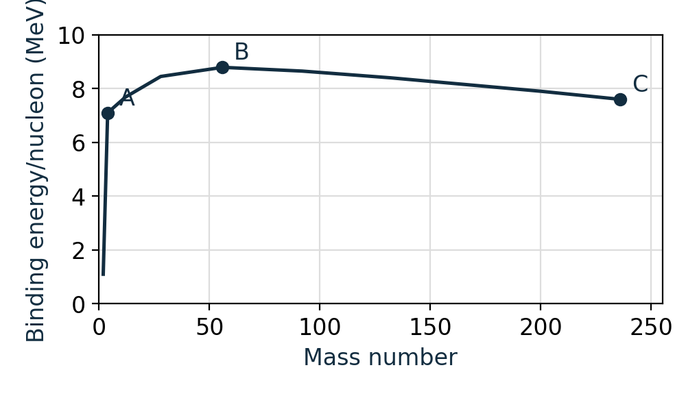
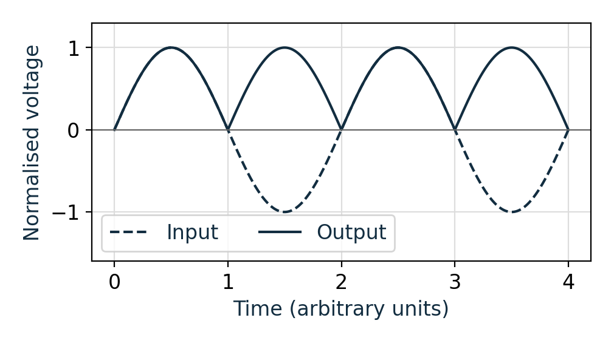
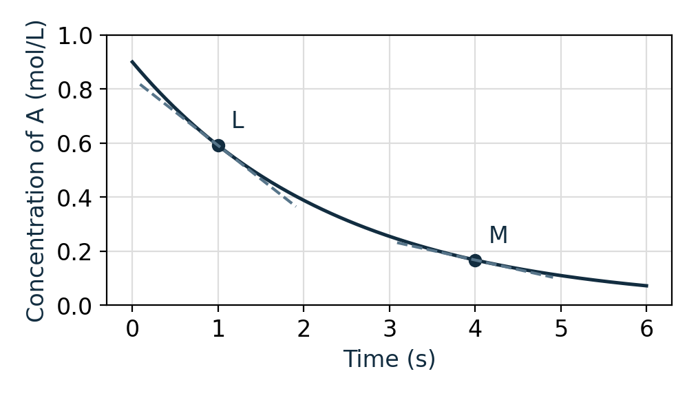
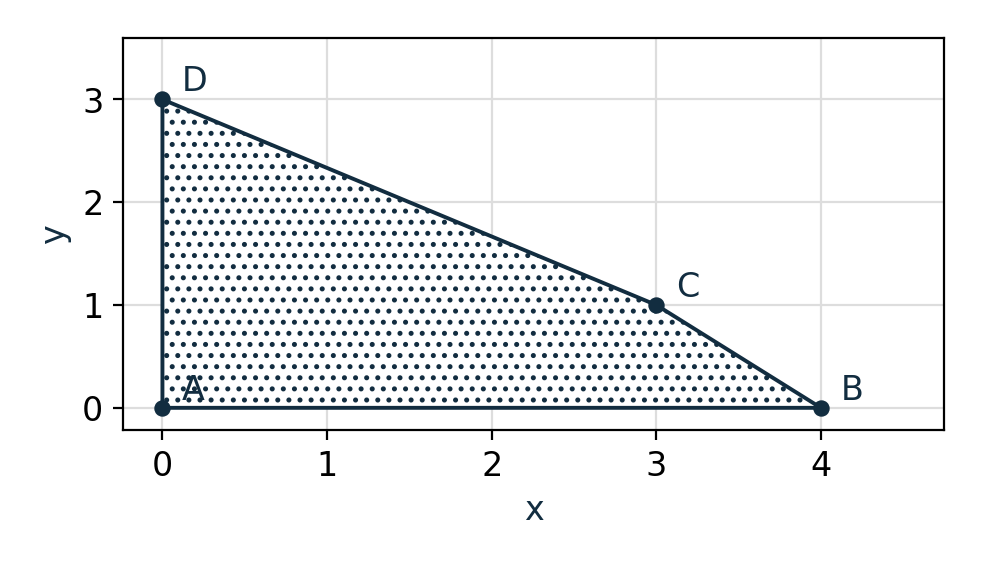

COMEDK UGET Test 13
180 minutes · 180 questions · +1 per correct answer · No negative marking
Physics
Q001. Which radiation lies between visible red light and microwaves in wavelength and is used in thermal imaging?
A) Ultraviolet
B) X-rays
C) Infrared
D) Gamma rays
Worked solution
Answer: (C) Infrared
Why and working: Infrared wavelengths are longer than visible wavelengths and shorter than microwaves. Warm objects emit in infrared bands detectable by thermal cameras.
Why not the others: (A) lies beyond the violet end at shorter wavelengths. (B) has wavelengths much shorter than visible light. (D) lies at the shortest wavelength end of the choices.
Q002. An ideal vertical spring stretches 4 cm under a 2 N weight. A second weight of 6 N is attached in place of the first. What is the extension from the natural length?
A) 8 cm
B) 4 cm
C) 12 cm
D) 16 cm
Worked solution
Answer: (C) 12 cm
Why and working: Equilibrium gives kx=W. The spring constant is 2/0.04=50 N/m, so the replacement weight produces 6/50=0.12 m.
Why not the others: (A) gives only the increase in extension. (B) keeps the old extension. (D) treats the second load as additional to the first.
Q003. An optical fibre guides a ray within a clear core. Replacing its cladding by a material with the same index as the core has what consequence for guidance by total internal reflection?
A) It lowers the critical angle and improves trapping
B) It removes the core–cladding total internal reflection mechanism
C) It makes all entry angles produce total internal reflection
D) It leaves the core–cladding reflection criterion unchanged
Worked solution
Answer: (B) It removes the core–cladding total internal reflection mechanism
Why and working: Guidance needs a higher-index core and lower-index cladding. Equal indices remove the interface contrast and give no ordinary critical-angle range for trapping.
Why not the others: (A) the index ratio increases toward one. (C) there is no index step to support total internal reflection. (D) the criterion depends on the ratio of indices.
Q004. Two equal-frequency point sources emit individually monochromatic waves, but their relative phase drifts randomly over times short compared with camera exposure. What will the recorded interference pattern show?
A) Fixed bright and dark fringes at the locations set by equal frequency
B) Exactly one permanent dark fringe at the midpoint
C) No stable fringes in the time average
D) A stable fringe pattern with twice the usual spacing
Worked solution
Answer: (C) No stable fringes in the time average
Why and working: The interference term depends on the relative phase and averages out during exposure if the phase wanders through its values. Equal frequency by itself does not give a stable phase relation.
Why not the others: (A) stationarity requires a fixed phase relation. (B) the centre phase difference also varies. (D) phase randomness washes out rather than resizes the pattern.
Q005. At a point, one coherent wave contributes displacement +3 mm when a second contributes −5 mm and a third +1 mm. What is the total displacement there at that instant?
A) +9 mm
B) +1 mm
C) −1 mm
D) −3 mm
Worked solution
Answer: (C) −1 mm
Why and working: Superposition adds the instantaneous signed displacements. Thus 3−5+1=−1 mm.
Why not the others: (A) sums magnitudes. (B) gives the wrong sign. (D) changes the sign of the third contribution.
Q006. A monochromatic beam contains three times as many photons as another but has half its frequency. How do the two beams compare in total energy and in momentum per photon, taking the first relative to the second?
A) Both are 3/2 as large
B) Total energy is 1/2 as large and momentum per photon is 3/2 as large
C) Total energy is 3/2 as large and momentum per photon is 1/2 as large
D) Both are 3 times as large
Worked solution
Answer: (C) Total energy is 3/2 as large and momentum per photon is 1/2 as large
Why and working: Total energy is N hν, so the combined factor is 3×1/2. A single photon has p=hν/c, so its momentum responds only to the frequency factor of 1/2.
Why not the others: (A) number of photons does not affect individual momentum. (B) reverses total and single-photon scaling. (D) uses the photon count factor for both quantities.
Q007. What is the sign of the Bohr-model total energy of an electron bound in a hydrogen atom if the ionisation limit is set to zero?
A) Negative
B) Positive
C) Zero for every orbit
D) Different for even and odd n
Worked solution
Answer: (A) Negative
Why and working: In a bound state the energy is E_n=−13.6/n² eV. Positive energy must be supplied to reach the limit at zero.
Why not the others: (B) is above the bound-state threshold. (C) zero belongs to the limit. (D) the denominator changes magnitude without changing sign.
Q008. A measured time is modelled as t=C√(L/g) for acceleration g and length L. What must be the dimensions of C?
A) Time
B) Inverse time
C) Dimensionless
D) Length
Worked solution
Answer: (C) Dimensionless
Why and working: L/g has units s², and its square root already has units of time. Therefore C carries no dimension.
Why not the others: (A) would give time squared. (B) would remove all time dimensions. (D) would add a length dimension.
Q009. The binding-energy-per-nucleon plot compares representative light, intermediate and very heavy nuclei. Which labelled region needs the greatest average energy per nucleon to separate its nuclei completely?

A) A
B) B
C) C
D) All three tie
Worked solution
Answer: (B) B
Why and working: The peak vertical coordinate is the largest binding energy per nucleon. In the plot, B is near the maximum and both A and C are lower.
Why not the others: (A) A has a smaller plotted value. (C) C lies below the peak. (D) the heights differ.
Q010. Under forward bias, what happens to the effective barrier and depletion width of a silicon p–n junction?
A) Both decrease
B) Both increase
C) Barrier decreases but width increases
D) Both stay fixed at their equilibrium values
Worked solution
Answer: (A) Both decrease
Why and working: With p connected toward positive potential and n toward negative, the applied field opposes the built-in field. The junction barrier and depletion width decrease.
Why not the others: (B) describes reverse bias. (C) the depletion layer narrows. (D) applied bias changes the junction.
Q011. Two runners’ straight position–time traces cross at the same point. Curve A is steeper and both slopes are positive. At the crossing what must be true?
A) They have equal positions and equal velocities
B) They have different positions, and A has greater acceleration
C) A is slower because its graph reaches the crossing earlier
D) They have equal positions, and A has greater velocity
Worked solution
Answer: (D) They have equal positions, and A has greater velocity
Why and working: The intersection gives the same position at the same time. The positive velocity is the slope, so A’s larger slope means greater speed and velocity.
Why not the others: (A) intersections do not imply equal slopes. (B) the positions agree and both straight traces have zero acceleration. (C) the crossing occurs at the same time.
Q012. At a point in an electrostatic field the field line is tangent to the positive y direction. In which direction does the electric force on a negative test charge point?
A) Positive y
B) Negative y
C) Positive x
D) Negative x
Worked solution
Answer: (B) Negative y
Why and working: The local tangent defines the electric field direction for a positive test charge. Multiplying the field vector by a negative charge reverses it.
Why not the others: (A) gives the force on a positive charge. (C) is perpendicular to the tangent. (D) also lies perpendicular to the tangent.
Q013. A permanent electric dipole is rotated slowly from parallel to antiparallel to a uniform electric field E. How much does its electrostatic potential energy increase?
A) 2pE
B) pE
C) Zero
D) −2pE
Worked solution
Answer: (A) 2pE
Why and working: Use U=−pE cos θ. The endpoints have energies −pE and +pE, so the increase is 2pE.
Why not the others: (B) counts only one endpoint magnitude. (C) initial and final cosines have opposite signs. (D) equals the opposite signed change.
Q014. A boat has velocity (4,3) m/s relative to shore while a buoy floating with the current has shore velocity (1,−1) m/s. What is the boat's speed relative to the buoy?
A) √29 m/s
B) √13 m/s
C) 7 m/s
D) 5 m/s
Worked solution
Answer: (D) 5 m/s
Why and working: Subtract shore velocity vectors to get (3,4) m/s. The relative speed is the Euclidean norm √(3²+4²)=5 m/s.
Why not the others: (A) adds the vectors before finding the norm. (B) places the wrong sign on the buoy’s y component. (C) adds component magnitudes.
Q015. A 6 Ω heater runs for 10 minutes at fixed battery voltage. It is replaced by a 12 Ω heater run for 30 minutes at the same voltage. What is the ratio of energy in the second heater to the first?
A) 6
B) 3/2
C) 2/3
D) 3
Worked solution
Answer: (B) 3/2
Why and working: At fixed voltage the power is V²/R. The second heater produces half the power for three times the duration, giving a ratio of 3/2.
Why not the others: (A) uses fixed current instead of fixed voltage. (C) inverts the computed ratio. (D) uses only the time ratio.
Q016. In a very long, air-core solenoid, where is the field approximately uniform and parallel to the axis?
A) Only just outside its middle winding
B) At the wire surface alone
C) All points beyond either end
D) Inside, well away from the ends
Worked solution
Answer: (D) Inside, well away from the ends
Why and working: The central interior field has approximate translational symmetry and magnitude μ₀nI. Fringing and weaker exterior fields occur elsewhere.
Why not the others: (A) the exterior is weak in the long-solenoid approximation. (B) the uniform region fills the interior core. (C) the ends have fringing fields.
Q017. When a swimmer pushes pool water backward, which two forces make a Newton third-law pair?
A) The swimmer's backward force on water and water’s forward force on the swimmer
B) The swimmer’s weight and the upward support on the swimmer
C) The water’s forward force on the swimmer and the swimmer’s forward acceleration
D) The swimmer's backward force on water and the water’s weight
Worked solution
Answer: (A) The swimmer's backward force on water and water’s forward force on the swimmer
Why and working: The two interaction forces occur between the same two bodies in opposite directions. They act on different bodies simultaneously.
Why not the others: (B) both forces would act on the swimmer. (C) an acceleration is not a force. (D) weight is the interaction with Earth.
Q018. Why are two ordinary magnetic field lines never drawn crossing where the magnetic field is finite and nonzero?
A) Their crossing would require air to become magnetic
B) Their crossing would necessarily give an infinite field magnitude
C) Their crossing would destroy charge conservation
D) Their tangents would assign two directions to one field vector
Worked solution
Answer: (D) Their tangents would assign two directions to one field vector
Why and working: The field has a unique local vector direction wherever it is nonzero. A pair of intersecting field lines with distinct tangents would violate uniqueness of direction.
Why not the others: (A) air can have a magnetic field without that implication. (B) magnitudes are not the contradiction. (C) electric charge conservation is unrelated here.
Q019. An isolated inductor has fixed self-inductance L. Its current ramps upward at 3 A/s and then downward at 1 A/s. With orientation held fixed, how do the induced emfs compare?
A) Opposite signs, with the rising-ramp magnitude three times as large
B) Same signs, with the rising-ramp magnitude three times as large
C) Opposite signs with equal magnitude
D) Same signs and equal magnitude
Worked solution
Answer: (A) Opposite signs, with the rising-ramp magnitude three times as large
Why and working: The fixed-orientation induced emf is −L dI/dt. The derivatives have opposite signs and their magnitudes are in ratio 3 to 1.
Why not the others: (B) ignores reversal of the derivative. (C) applies only if rates agree in magnitude. (D) misses both changes.
Q020. An ideal spring initially compressed by x is released and later extends by x. What is its stored energy at those two displacements?
A) Zero for the compressed spring only
B) Equal at the two displacements
C) Twice as large when the spring is extended
D) Negative at compression and positive at extension
Worked solution
Answer: (B) Equal at the two displacements
Why and working: The potential energy measured from the relaxed spring is kx²/2. Equal-magnitude displacements give equal positive energies.
Why not the others: (A) compression also stores energy. (C) the magnitude of displacement is unchanged. (D) the displacement is squared.
Q021. A series RLC circuit runs at its original resonance frequency. A larger capacitor is installed with fixed L and R. How do the new resonant frequency and the original test frequency compare?
A) The new resonance is higher, so the test frequency is below resonance
B) They remain equal because only R controls resonance
C) The new resonance is lower, so the test frequency is above resonance
D) Resonance is impossible after changing C
Worked solution
Answer: (C) The new resonance is lower, so the test frequency is above resonance
Why and working: The resonant frequency is 1/(2π√(LC)). Increasing C decreases that frequency, while the test frequency did not change.
Why not the others: (A) reverses the dependence on capacitance. (B) R determines damping and impedance but not the stated resonance criterion. (D) finite positive L and C still give a resonance.
Q022. At a plane air–glass interface a point object in air is 12 cm from the interface. Use n_air=1 and n_glass=1.5. Where is the paraxial image for an observer in glass?
A) 8 cm into the air side
B) 18 cm into the glass side
C) 12 cm into the glass side
D) 18 cm into the air side
Worked solution
Answer: (D) 18 cm into the air side
Why and working: For a plane refracting surface the curvature term is zero, so n₂/v=n₁/u. With u=−12 cm, v=−18 cm, placing the virtual image on the incident side.
Why not the others: (A) inverts the refractive-index factor. (B) uses the magnitude but assigns the wrong side. (C) ignores both the ratio and the virtual sign.
Q023. A rotating platform has moment of inertia 6 kg·m² before a stationary child steps straight down onto it at a distance of 2 m from the axis. The child’s mass is 3 kg and friction at the axle gives negligible angular impulse. If the initial angular velocity was 6 rad/s, what is the final angular speed?
A) 2 rad/s
B) 3 rad/s
C) 6 rad/s
D) 18 rad/s
Worked solution
Answer: (A) 2 rad/s
Why and working: The child adds mr²=3×4=12 kg·m² but initially contributes no angular momentum about the axis. Conservation gives 6×6=(6+12)ω_f, so ω_f=2.
Why not the others: (B) incorrectly doubles instead of triples the inertia. (C) keeps speed unchanged despite the added inertia. (D) treats angular speed as proportional to inertia.
Q024. Two colour filters give neighbouring bright-fringe separations β and 3β/2 in the same double-slit setup. What is the ratio of the second wavelength to the first?
A) 2/3
B) 9/4
C) 1
D) 3/2
Worked solution
Answer: (D) 3/2
Why and working: With D and d fixed, β=λD/d is directly proportional to λ. The wavelength ratio is therefore the measured spacing ratio, 3/2.
Why not the others: (A) inverts the requested comparison. (B) squares a linear ratio. (C) would imply the same fringe spacing.
Q025. Two electrons have momentum magnitudes p and 5p. What is the ratio of the first de Broglie wavelength to the second?
A) 1/5
B) 25
C) 1
D) 5
Worked solution
Answer: (D) 5
Why and working: The wavelengths are h/p and h/(5p). Their quotient is 5 because wavelength is inversely proportional to momentum.
Why not the others: (A) inverts the requested quotient. (B) squares the momentum factor. (C) equal masses do not imply equal momenta or wavelengths.
Q026. A shaft descends to one quarter of the radius of a uniform spherical planet below its surface. What fraction of surface gravity remains there?
A) 3/4
B) 1/4
C) 9/16
D) 16/9
Worked solution
Answer: (A) 3/4
Why and working: Inside a uniform sphere g is proportional to distance from the centre. The distance is R−R/4=3R/4, so the fraction is 3/4.
Why not the others: (B) uses depth rather than central radius. (C) squares a linear dependence. (D) uses the exterior inverse-square law.
Q027. Which hydrogen emission transition gives the first line of the Balmer series?
A) n=2 to n=1
B) n=4 to n=2
C) n=2 to n=3
D) n=3 to n=2
Worked solution
Answer: (D) n=3 to n=2
Why and working: Balmer emission ends at n=2. The first member begins at the nearest higher level n=3.
Why not the others: (A) ends at n=1 in the Lyman series. (B) is the next Balmer member. (C) an upward transition absorbs energy.
Q028. Which description is consistent with exothermic fusion of light nuclei?
A) Two light nuclei form a heavier product with greater binding energy per nucleon
B) A heavy nucleus breaks into medium-mass fragments
C) A nucleus emits an atomic electron because a shell vacancy appears
D) A light nucleus becomes less tightly bound per nucleon and necessarily releases energy
Worked solution
Answer: (A) Two light nuclei form a heavier product with greater binding energy per nucleon
Why and working: For light nuclei, moving toward more tightly bound products lowers the total rest energy, allowing energy release. Fusion combines nuclei.
Why not the others: (B) describes fission. (C) atomic electronic rearrangement is not nuclear fusion. (D) less binding per nucleon does not account for released energy in the stated combination.
Q029. A rod stretched along its length becomes 0.30% longer and 0.09% thinner in diameter. What is its Poisson ratio?
A) −0.30
B) 3.33
C) 0.30
D) −3.33
Worked solution
Answer: (C) 0.30
Why and working: Poisson ratio is minus lateral strain divided by axial strain. Here −(−0.09%)/(0.30%)=0.30.
Why not the others: (A) omits the minus sign in the definition. (B) inverts the ratios. (D) both inverts the ratio and omits the defining sign.
Q030. A diode is tested at equal small voltage magnitudes, one forward after its knee and one reverse below breakdown. How do current magnitudes compare?
A) The reverse current is much larger
B) The forward current is much larger
C) They are equal because the voltage magnitudes are equal
D) Both currents must be zero
Worked solution
Answer: (B) The forward current is much larger
Why and working: The forward-biased junction conducts strongly above its knee. Reverse bias below breakdown usually allows only a small minority-carrier current.
Why not the others: (A) the reverse junction blocks major current before breakdown. (C) its response is asymmetric. (D) the forward voltage is stipulated to exceed its knee.
Q031. An electric dipole has moment p and is held 30° from a uniform field E. It is rotated to double the torque magnitude while keeping p and E constant. What final angle between p and E meets that requirement?
A) 90°
B) 60°
C) 120°
D) 180°
Worked solution
Answer: (A) 90°
Why and working: The initial torque is pE sin 30°=pE/2. Doubling it requires sin θ=1, whose only solution for the angle between vectors is θ=90°.
Why not the others: (B) sine is √3/2 rather than one. (C) has the same sine as 60°. (D) antiparallel alignment has no torque.
Q032. Two spheres of equal radius fall in one viscous liquid under Stokes conditions. One has density twice the liquid’s density and the other three times it. What is the terminal-speed ratio of the denser sphere to the less dense one?
A) 2
B) 3/2
C) 4
D) 1/2
Worked solution
Answer: (A) 2
Why and working: At terminal speed v_t∝ρ_s−ρ_f for fixed r and viscosity. The excess densities are respectively 2ρ_f and ρ_f.
Why not the others: (B) uses whole sphere density and ignores buoyancy. (C) would square the ratio of excess densities. (D) inverts the requested ratio.
Q033. Why can an isolated conducting sphere redistribute charge over its surface quickly compared with a plastic sphere?
A) Its protons move freely through the solid
B) It contains mobile charge carriers
C) Its charges cannot respond to electric fields
D) Its charge is always produced by nuclear decay
Worked solution
Answer: (B) It contains mobile charge carriers
Why and working: Conducting solids have mobile electrons able to redistribute in response to an internal electric field.
Why not the others: (A) lattice protons are essentially fixed. (C) represents the opposite behaviour. (D) redistribution does not require decay.
Q034. Two identical wires are made of the same ordinary metal. One is heated while the other stays at room temperature and geometry changes are negligible. Which conductivity trend is expected?
A) The heated wire has greater conductivity because its resistivity rises
B) Conductivity stays fixed because the material still has the same name
C) Conductivity and resistivity both decrease when temperature rises
D) The heated wire has lower conductivity because its resistivity rises
Worked solution
Answer: (D) The heated wire has lower conductivity because its resistivity rises
Why and working: Lattice scattering typically increases in metals when heated. With σ=1/ρ, increasing resistivity decreases conductivity.
Why not the others: (A) conductivity is reciprocal to resistivity. (B) the scattering rate depends on temperature. (C) the two quantities change in opposite directions.
Q035. In an insulated cup of negligible heat capacity, 100 g of hot water at 70°C is mixed with an unknown mass of cool water at 20°C. The final temperature is 40°C. What cool-water mass was used?
A) 100 g
B) 66.7 g
C) 150 g
D) 250 g
Worked solution
Answer: (C) 150 g
Why and working: With equal specific heats, 100(70−40)=m(40−20), so m=150 g. The cooler portion needs more mass because its individual temperature change is smaller.
Why not the others: (A) would yield a final temperature of 45 degrees. (B) reverses the drops and rises in the mass ratio. (D) includes the hot portion in the answer mass.
Q036. An electron moves along +x and an electric field points along +z. Which magnetic-field direction permits the electric and magnetic forces to cancel for a suitable magnitude?
A) Positive y
B) Negative y
C) Positive z
D) Negative x
Worked solution
Answer: (B) Negative y
Why and working: Cancellation requires v×B=−E, regardless of charge sign. The cross product +x with −y is −z, which cancels the prescribed electric term.
Why not the others: (A) gives +z, reinforcing the electric term. (C) the cross product points along negative y. (D) a field along the velocity gives zero magnetic force.
Q037. Three simple specimens are bismuth, aluminium and iron at ordinary temperature. Which is weakly repelled by a magnet?
A) Aluminium
B) Iron
C) Bismuth
D) All three are weakly repelled
Worked solution
Answer: (C) Bismuth
Why and working: Bismuth is diamagnetic, so it produces an induced response opposing the applied field and is weakly repelled in a field gradient.
Why not the others: (A) aluminium is weakly paramagnetic. (B) iron is ferromagnetic. (D) the materials do not have the same response.
Q038. An ideal cyclic device would absorb heat from one reservoir and turn all of it into work, with no other effect. Which principle rules out the device?
A) First law alone, because work can never equal heat input
B) Charge conservation
C) Kelvin–Planck form of the second law
D) Newton’s third law
Worked solution
Answer: (C) Kelvin–Planck form of the second law
Why and working: The first law would allow an equal heat and work balance over a cycle. Kelvin–Planck excludes complete conversion of heat from a single reservoir to work as the sole effect.
Why not the others: (A) the proposed balance conserves energy. (B) there is no charge-accounting conflict. (D) the restriction is thermodynamic.
Q039. A coil produces an emf in a nearby open coil while its own current changes. If the second coil is moved much farther away while the same current ramp is maintained, why does its emf become smaller?
A) The driving current’s derivative changes sign
B) Mutual inductance decreases as less changing flux links it
C) The second coil acquires a DC supply
D) Its open circuit prevents induction from occurring at any distance
Worked solution
Answer: (B) Mutual inductance decreases as less changing flux links it
Why and working: Induced emf is −M dI/dt. For fixed current ramp, weaker magnetic coupling reduces M and therefore the magnitude.
Why not the others: (A) the ramp is assumed unchanged. (C) moving a coil does not supply DC. (D) an emf can exist at open terminals.
Q040. A device demands 3 kW of real power from a 250 V rms supply. Its power factor improves from 0.60 to unity while real power remains fixed. How does its rms line current change?
A) It rises from 12 A to 20 A
B) It drops from 20 A to 12 A
C) It drops from 20 A to 8 A
D) It stays at 12 A
Worked solution
Answer: (B) It drops from 20 A to 12 A
Why and working: The line current is P/(V cos φ). It is initially 3000/(250×0.60)=20 A and finally 3000/250=12 A.
Why not the others: (A) assigns the two power factors to the opposite states. (C) 8 A is the drop rather than the final current. (D) applies the unity factor to the original state.
Q041. At equal temperature, gas X is an ideal collection of rigid linear molecules and gas Y consists of rigid nonlinear molecules. Rotations are active and vibrations are frozen in both. What is the ratio of mean molecular internal thermal energies X:Y?
A) 3:2
B) 5:6
C) 6:5
D) 1:1
Worked solution
Answer: (B) 5:6
Why and working: Both have three translational degrees. The linear molecule has two independent rotational degrees and the nonlinear molecule has three. Equipartition contributes kT/2 to each active degree.
Why not the others: (A) uses only an inverted rotational comparison. (C) inverts the requested ratio. (D) ignores that rotational counts differ.
Q042. A biconvex lens has both curvature radii unchanged. Its surrounding medium is adjusted until its refractive index matches that of the lens. What paraxial power does the lens then have?
A) Its original positive power
B) Its original power with a negative sign
C) Infinite power
D) Zero
Worked solution
Answer: (D) Zero
Why and working: The relative-index factor in the lens-maker equation is n_lens/n_medium−1. Index matching makes it zero and hence the power is zero.
Why not the others: (A) curvature alone does not ensure nonzero power without index contrast. (B) there is no net convergence or divergence in the matched case. (C) zero power corresponds to an infinite focal length.
Q043. A single-slit pattern is projected on the same distant screen, without changing the slit, first with red light and then with blue light. Which central bright region is wider?
A) Red
B) Blue
C) They have equal width because both are visible
D) Neither produces a central maximum
Worked solution
Answer: (A) Red
Why and working: At the same slit width, a longer wavelength spreads the diffraction pattern more. Red light has longer wavelength than blue light.
Why not the others: (B) reverses the wavelength ordering. (C) visible wavelengths still differ. (D) on-axis contributions still add constructively.
Q044. An undamped harmonic oscillator has kinetic energy three times potential energy at a particular point. What is the displacement magnitude as a fraction of amplitude?
A) √3/2
B) 1/2
C) 1/4
D) 3/4
Worked solution
Answer: (B) 1/2
Why and working: The potential energy is one quarter of total. Since U/E=x²/A², the positive magnitude ratio is √(1/4)=1/2.
Why not the others: (A) would give three quarters of energy as potential. (C) gives the potential energy fraction without taking its square root. (D) confuses the kinetic energy fraction with displacement.
Q045. The input and output voltage waveforms of a diode circuit are shown. Which operation explains the output waveform?

A) Half-wave rectification
B) Amplitude reduction without polarity change
C) DC filtering to a constant voltage
D) Full-wave rectification
Worked solution
Answer: (D) Full-wave rectification
Why and working: Every input half-cycle contributes an output lobe above zero. Reversing the negative lobes yields the observed repeating positive signal.
Why not the others: (A) would leave alternate half-cycles blank. (B) would preserve negative portions. (C) output still varies with time.
Q046. A point charge lies outside a completely closed hollow surface without crossing it. What is its net contribution to outward electric flux through the entire surface?
A) Zero
B) q/ε₀
C) −q/ε₀
D) A value proportional to the closest distance
Worked solution
Answer: (A) Zero
Why and working: Gauss’s law gives total flux from enclosed charge. Entry and exit from an external charge cancel in the oriented integral.
Why not the others: (B) would require the positive charge to be enclosed. (C) would require negative enclosed charge. (D) distance affects local field without changing the net flux.
Q047. Two plane mirrors meet at right angles in one plane. A ray in that plane makes one reflection from each. What is the outgoing direction relative to the incoming direction before the first reflection?
A) Parallel in the same sense
B) Antiparallel
C) Perpendicular in every case
D) At an angle that can only be found from the incident angle
Worked solution
Answer: (B) Antiparallel
Why and working: Each reflection flips the velocity component normal to one mirror. Perpendicular mirrors flip the two independent components, so the final direction is the negative of the original.
Why not the others: (A) requires neither component to flip overall. (C) two reversals yield 180 degrees, not 90. (D) incidence affects individual reflections but not this net change.
Q048. An isolated charged capacitor is filled completely by an uncharged dielectric slab of relative permittivity 4. How do its free plate charge and the field between plates change after polarisation?
A) Free charge falls to one quarter and the net field stays fixed
B) Both become four times larger
C) Free charge stays fixed and the field does too
D) Free charge stays fixed and the net field becomes one quarter
Worked solution
Answer: (D) Free charge stays fixed and the net field becomes one quarter
Why and working: No connection can remove free plate charge. Polarisation induces bound charges that oppose the original field, reducing the net field by the dielectric factor for complete filling.
Why not the others: (A) confuses isolated operation with voltage held fixed and gives the wrong charge trend. (B) polarisation weakens rather than amplifies the field. (C) ignores the opposing polarisation field.
Q049. A cell of emf 12 V and internal resistance 1 Ω has terminal voltage 9 V while supplying a load. What resistance would an additional resistor need if put in series with the existing load to raise the terminal voltage to 10 V?
A) 1 Ω
B) 2 Ω
C) 3 Ω
D) 5 Ω
Worked solution
Answer: (B) 2 Ω
Why and working: Initially I=(12−9)/1=3 A, so the external load is 9/3=3 Ω. For a terminal voltage of 10 V, I=2 A and the external total is 5 Ω. Add 2 Ω.
Why not the others: (A) mistakes the terminal-voltage change for resistance. (C) gives the original load. (D) gives the final total external resistance.
Q050. A velocity–time trace is horizontal and below the time axis for a specified interval. What are the acceleration and signed displacement in that interval?
A) Negative acceleration and zero displacement
B) Positive acceleration and positive displacement
C) Zero acceleration and zero displacement
D) Zero acceleration and negative displacement
Worked solution
Answer: (D) Zero acceleration and negative displacement
Why and working: Slope gives acceleration and is zero here. Area under the graph is below the axis and therefore has negative sign.
Why not the others: (A) confuses negative velocity with negative acceleration. (B) both signs contradict the horizontal trace below zero. (C) constant nonzero velocity produces displacement.
Q051. A straight wire segment points east with a steady current and experiences an upward magnetic force. Which field direction is consistent with this observation if the field is perpendicular to the wire?
A) South
B) East
C) North
D) Up
Worked solution
Answer: (C) North
Why and working: Using east, north and up as a right-handed triad, east cross north points up. The current is east so the magnetic field must be north.
Why not the others: (A) would give a downward force. (B) produces zero magnetic force. (D) would point the force south.
Q052. A block of iron is heated beyond its Curie temperature and placed in a weak applied field. How does its magnetic character change?
A) The spontaneous ferromagnetic ordering disappears and it behaves paramagnetically
B) Heating strengthens spontaneous alignment of its domains
C) It necessarily becomes strongly diamagnetic
D) It retains ferromagnetism with exactly the same magnetisation
Worked solution
Answer: (A) The spontaneous ferromagnetic ordering disappears and it behaves paramagnetically
Why and working: Thermal agitation above the Curie point destroys long-range ferromagnetic ordering. A weak induced response of paramagnetic type remains.
Why not the others: (B) thermal agitation disrupts ordering. (C) loss of spontaneous magnetisation does not require diamagnetism. (D) the transition changes the character of the response.
Q053. The component form of a unit vector is (a,2/3,−1/3), and it points partly in the negative x direction. What is a?
A) +2/3
B) −4/9
C) −1/3
D) −2/3
Worked solution
Answer: (D) −2/3
Why and working: Unit norm requires a²+4/9+1/9=1, so a²=4/9. The negative x component fixes a=−2/3.
Why not the others: (A) violates the direction condition. (B) uses the square rather than the signed root. (C) makes the squared length less than one.
Q054. An AC generator’s rotating coil is momentarily oriented with its normal parallel to the field. Which statement is true at that instant?
A) Flux is zero and emf magnitude is maximal
B) Flux and emf magnitudes are maximal together
C) Flux magnitude is maximal and emf is zero
D) Flux and emf are both always zero
Worked solution
Answer: (C) Flux magnitude is maximal and emf is zero
Why and working: The flux is NBA cos θ, maximal in magnitude at parallel alignment. Its time derivative contains sin θ, hence the emf vanishes there.
Why not the others: (A) describes the perpendicular orientation. (B) the extrema are separated in phase. (D) continuous rotation changes the flux.
Q055. A real object is placed 15 cm from a thin converging lens of power +10 D. What is the signed transverse magnification?
A) +2
B) −2
C) −1/2
D) +1/2
Worked solution
Answer: (B) −2
Why and working: Power gives f=10 cm. With u=−15 cm, 1/v=1/f+1/u=1/30, hence m=v/u=−2.
Why not the others: (A) uses the magnitude without inversion sign. (C) takes the reciprocal of the magnitude. (D) both inverts the ratio and loses the sign.
Q056. A stationary firework separates into two fragments on a surface with negligible external horizontal impulse. One fragment is three times as massive as the other. How do their speeds compare horizontally?
A) Both move in opposite directions at equal speeds
B) The heavier fragment moves three times as fast in the same direction
C) The heavier fragment remains at rest
D) The heavier fragment moves at one third of the lighter’s speed in the opposite direction
Worked solution
Answer: (D) The heavier fragment moves at one third of the lighter’s speed in the opposite direction
Why and working: Horizontal momentum sums to zero. Opposite momenta of equal magnitude give speeds inversely proportional to the masses.
Why not the others: (A) equal speeds would not cancel unequal masses. (B) the direction and ratio are both wrong. (C) a lone moving fragment would carry nonzero net momentum.
Q057. Use a coaxial Gaussian cylinder of length 0.50 m about a long uniformly charged wire. Its curved area is 0.20 m² and the measured radial electric field there is 150 N/C outward. What is the wire’s linear charge density?
A) 60ε₀ N·m/C
B) 30ε₀ N·m/C
C) 75ε₀ N·m/C
D) 375ε₀ N·m/C
Worked solution
Answer: (A) 60ε₀ N·m/C
Why and working: Flux through the end caps is zero because the radial field is tangent to them. Gauss’s law gives λL=ε₀EA_curved=30ε₀ in consistent units. Divide by 0.50 m to get 60ε₀ N·m/C, equivalent to charge per length.
Why not the others: (B) gives enclosed charge numerically without dividing by length. (C) uses length instead of curved area in the flux and omits a step. (D) uses the reciprocal of area instead of multiplying by it.
Q058. A 6 μF capacitor is in series with a parallel combination of 3 μF and 9 μF. A 12 V source is connected across the full network. What charge is on the 9 μF capacitor?
A) 48 μC
B) 72 μC
C) 36 μC
D) 108 μC
Worked solution
Answer: (C) 36 μC
Why and working: The parallel block is 12 μF and the series equivalent is 4 μF. The series charge is 48 μC, placing 4 V across the block. Thus the 9 μF capacitor carries 9×4=36 μC.
Why not the others: (A) gives the whole block charge. (B) uses the 8 V across the series capacitor. (D) applies the entire source voltage to one branch.
Q059. Which force can be modelled as conservative for a block sliding along a stationary rough ramp near Earth’s surface?
A) Kinetic friction
B) The net of gravity and kinetic friction
C) Gravity
D) A force always tangent to its velocity and opposing it
Worked solution
Answer: (C) Gravity
Why and working: Gravity’s work depends on the height difference, so it can be obtained from a potential. Sliding friction dissipates energy depending on path length.
Why not the others: (A) friction depends on distance travelled. (B) its friction component makes the net work path-dependent. (D) a persistent opposing force dissipates energy.
Q060. Two cells have emfs 6 V and 2 V, and each has internal resistance 1 Ω. They are wired in series with opposing polarity to a 6 Ω external resistor. What current magnitude flows?
A) 0.50 A
B) 1.0 A
C) 2/3 A
D) 2.0 A
Worked solution
Answer: (A) 0.50 A
Why and working: Opposing emfs give 6−2=4 V. The internal resistances still add to 2 Ω, making total resistance 8 Ω. The loop current magnitude is 4/8 A.
Why not the others: (B) adds the opposed emfs. (C) omits internal resistances. (D) uses the internal resistance alone.
Chemistry
Q061. A solution label gives a concentration of 0.40 mol/L and a sample volume of 250 mL. What amount of solute is present in the sample?
A) 1.60 mol
B) 100 mol
C) 0.10 mol
D) 0.625 mol
Worked solution
Answer: (C) 0.10 mol
Why and working: One litre of solution contains 0.40 mol. A quarter litre therefore contains 0.40×0.250=0.10 mol.
Why not the others: (A) divides by sample volume. (B) treats millilitres as litres. (D) divides volume by concentration.
Q062. Reductive ozonolysis of 3-methylpent-2-ene gives two carbonyl compounds. Which carbonyl functional class is found at each of the former double-bond carbons?
A) A ketone at C2 and an aldehyde at C3
B) A ketone at both carbons
C) An aldehyde at C2 and a ketone at C3
D) An aldehyde at both carbons
Worked solution
Answer: (C) An aldehyde at C2 and a ketone at C3
Why and working: Before cleavage C2 carries one H and C3 has two carbon substituents. Each becomes a carbonyl carbon on cleavage, retaining the corresponding immediate substituents.
Why not the others: (A) swaps the two substitution patterns. (B) C2 retains a hydrogen. (D) C3 has no hydrogen to become an aldehyde.
Q063. Under standard conditions E°(Ag⁺/Ag)=+0.80 V and E°(Cu²⁺/Cu)=+0.34 V. Which metal is oxidised in the spontaneous galvanic cell and what is E°_cell?
A) Ag and +0.46 V
B) Cu and +0.46 V
C) Cu and +1.14 V
D) Ag and −0.46 V
Worked solution
Answer: (B) Cu and +0.46 V
Why and working: Ag⁺ has the higher reduction potential and is reduced at the cathode. Cu is oxidised and the difference of tabulated reduction potentials is 0.80−0.34=0.46 V.
Why not the others: (A) assigns oxidation to the higher reduction potential. (C) adds two reduction potentials. (D) gives the nonspontaneous direction.
Q064. Two marked times appear on the concentration plot for reactant A. How does the instantaneous disappearance rate at L compare with that at M?

A) The rate is greater at L because its tangent has the larger downward slope magnitude
B) The rate is greater at M because its time coordinate is larger
C) The rates are equal because both points lie on one smooth curve
D) The rate is zero at L because concentration is positive there
Worked solution
Answer: (A) The rate is greater at L because its tangent has the larger downward slope magnitude
Why and working: Disappearance rate is −d[A]/dt. The tangent at L is steeper downward than the tangent at M, so its negative slope has the larger magnitude.
Why not the others: (B) elapsed time alone does not determine the derivative. (C) slopes vary along the curved trace. (D) positive concentration does not imply zero slope.
Q065. A ground-state nitrogen atom has filled 1s and 2s orbitals and three remaining electrons. Which arrangement of its 2p electrons has lowest energy?
A) One in each p orbital with parallel spins
B) Two paired in one p orbital and one in another
C) All three in one p orbital
D) Two separate with parallel spins and the third in 3s
Worked solution
Answer: (A) One in each p orbital with parallel spins
Why and working: The three electrons can occupy degenerate 2p orbitals singly with aligned spins by Hund’s rule. This also respects Pauli exclusion and avoids promoting an electron.
Why not the others: (B) pairs before all degenerate orbitals are singly filled. (C) one spatial orbital permits only two electrons. (D) promotes an electron above the 2p subshell.
Q066. Compare Zn and Cu⁺. Both have a filled 3d subshell. Why is Cu a transition element under the usual incomplete-d definition while Zn is excluded?
A) Cu can form Cu²⁺ with 3d⁹, whereas Zn and its usual Zn²⁺ ion have 3d¹⁰
B) Neutral Zn has 3d⁹, whereas Cu does not form any ions
C) Cu is a transition element only because it is in the fourth period
D) Every element with a filled d subshell in its neutral atom is excluded
Worked solution
Answer: (A) Cu can form Cu²⁺ with 3d⁹, whereas Zn and its usual Zn²⁺ ion have 3d¹⁰
Why and working: The criterion is an incomplete d subshell in the atom or a commonly formed cation. Cu²⁺ supplies that case and Zn²⁺ does not.
Why not the others: (B) Zn has a full 3d subshell and Cu does form ions. (C) period number alone does not decide the category. (D) the criterion can be met by a cation.
Q067. A transition-metal ion binds three identical ligands. Each ligand forms one chelate ring with that ion using two donor atoms. What coordination number follows?
A) Three
B) Six
C) Nine
D) Two
Worked solution
Answer: (B) Six
Why and working: Each chelating ligand contributes two donor atoms. Three ligands therefore provide six metal–donor attachments.
Why not the others: (A) counts the ligands instead of the donor atoms. (C) would require tridentate ligands. (D) counts the denticity of one ligand only.
Q068. Ethanol and dimethyl ether have the same molecular formula. Why does ethanol boil at a higher temperature under the same pressure?
A) Only dimethyl ether has an oxygen atom
B) Ether molecules attract exclusively through covalent bonds between molecules
C) Ethanol has twice the molar mass
D) Its O−H group allows strong hydrogen bonding between ethanol molecules
Worked solution
Answer: (D) Its O−H group allows strong hydrogen bonding between ethanol molecules
Why and working: Ethanol has both a hydrogen-bond donor and an acceptor. Dimethyl ether has an oxygen acceptor but no O−H donor for that type of self-association.
Why not the others: (A) both isomers contain oxygen. (B) ordinary bulk attractions are intermolecular. (C) isomers here have the same molar mass.
Q069. Which IUPAC name follows for CH₃–CH(Br)–CH₂–CH₃?
A) 2-Bromobutane
B) 3-Bromobutane
C) 1-Bromobutane
D) 2-Bromopropane
Worked solution
Answer: (A) 2-Bromobutane
Why and working: The longest chain has four carbon atoms and the bromo group is attached to an internal carbon. Numbering from the nearer end gives position 2.
Why not the others: (B) does not use the lowest locant. (C) would require attachment to an end carbon. (D) has too few carbons.
Q070. Which alcohol is formed when propene undergoes standard acid-catalysed hydration?
A) Propan-1-ol
B) Propan-2-ol
C) Propanal
D) Propanone
Worked solution
Answer: (B) Propan-2-ol
Why and working: Protonation favours the secondary carbocation, which water attacks before deprotonation. This places OH at carbon 2.
Why not the others: (A) would require another hydration pathway. (C) the reaction is addition, not oxidation to an aldehyde. (D) no ketone is formed directly.
Q071. An ideal perfectly ordered crystal with a unique ground state is approached toward absolute zero. Which limiting entropy follows from the third law?
A) Infinite positive entropy
B) A finite value always equal to its molar mass
C) Negative infinity
D) Zero
Worked solution
Answer: (D) Zero
Why and working: In this ideal limit only one microscopic configuration is available, so S approaches k ln 1=0.
Why not the others: (A) requires infinitely many accessible configurations. (B) mass and entropy have different units and meanings. (C) one configuration has finite zero entropy.
Q072. Two compounds are named pentan-2-one and pentanal. Which structural difference follows from the suffixes and locant?
A) Both have a terminal aldehyde carbon and differ only in where hydrogen is attached
B) Pentan-2-one has OH at C2 and pentanal has an internal C=C bond
C) Pentan-2-one has an internal carbonyl at C2, while pentanal has a terminal carbonyl
D) Both have the same connectivity because their molecular formulas agree
Worked solution
Answer: (C) Pentan-2-one has an internal carbonyl at C2, while pentanal has a terminal carbonyl
Why and working: The suffix -one describes a ketone; the locant 2 gives its carbonyl position. The suffix -al denotes an aldehyde with its carbonyl carbon as the terminal C1.
Why not the others: (A) a ketone carbonyl is bonded to two carbons here. (B) neither suffix describes an alcohol or alkene. (D) these functional isomers have different connectivity.
Q073. Which name and class fit CH₃CH₂–NH–CH₃?
A) Propan-1-amine, a primary amine
B) N-Methylethanamine, a tertiary amine
C) N-Methylethanamine, a secondary amine
D) Dimethylamine, a secondary amine
Worked solution
Answer: (C) N-Methylethanamine, a secondary amine
Why and working: Nitrogen is bonded to an ethyl and a methyl group plus one hydrogen, so it is secondary. The ethyl group supplies the parent name and methyl is an N substituent.
Why not the others: (A) assumes one continuous carbon chain bonded to nitrogen. (B) a tertiary amine has three carbon groups on nitrogen. (D) has two methyl groups instead of one ethyl.
Q074. In the conversion of 2-bromobutane to but-2-ene, what distinguishes the reaction class from substitution?
A) An adjacent hydrogen and the bromine substituent are removed as a double bond forms
B) Bromine is replaced by an OH group while the skeleton stays saturated
C) A carbon group changes position while molecular formula stays fixed
D) Two reagents add across a pre-existing double bond
Worked solution
Answer: (A) An adjacent hydrogen and the bromine substituent are removed as a double bond forms
Why and working: Removal of a β hydrogen and a leaving group from neighbouring carbons makes the π bond. This is elimination.
Why not the others: (B) describes substitution. (C) describes rearrangement. (D) describes addition.
Q075. One sugar is a five-carbon aldehyde in the open-chain form. Which classification uses both observations?
A) Aldohexose
B) Ketopentose
C) Ketohexose
D) Aldopentose
Worked solution
Answer: (D) Aldopentose
Why and working: The prefix aldo identifies an aldehyde and pentose indicates five carbons. The compound satisfies both.
Why not the others: (A) hexose requires six carbons. (B) keto would require an internal ketone. (C) both its carbon count and carbonyl class would be wrong.
Q076. For a gas dissolved in a dilute liquid at fixed temperature, what happens to its equilibrium mole fraction when its partial pressure above the liquid doubles in the Henry-law range?
A) It halves
B) It quadruples
C) It doubles
D) It stays fixed
Worked solution
Answer: (C) It doubles
Why and working: At fixed temperature p=K_Hx, with constant K_H. Therefore x changes in the same proportion as the partial pressure.
Why not the others: (A) incorrectly uses inverse proportionality. (B) uses a square rather than linear law. (D) this would require the partial pressure to stay fixed.
Q077. What is the preferred name of HC≡C–CH(CH₃)–CH₃?
A) 2-Methylbut-3-yne
B) 3-Methylbut-1-yne
C) 3-Methylbut-1-ene
D) 2-Methylpent-1-yne
Worked solution
Answer: (B) 3-Methylbut-1-yne
Why and working: The longest chain containing the triple bond has four carbons. Give the triple bond the lowest locant, then locate methyl at carbon 3.
Why not the others: (A) numbers from the wrong end. (C) specifies a double bond. (D) has too many carbons.
Q078. A cell initially has Q=1. The reaction quotient is then held at Q=100 by fixed activities, and the reaction can exchange either one or two electrons in the corresponding comparison of two hypothetical cells with the same E° at 298 K. Which cell loses more voltage relative to its own E°?
A) The two-electron cell loses twice as much
B) Both lose the same voltage
C) The one-electron cell loses twice as much
D) Neither changes because the temperature is fixed
Worked solution
Answer: (C) The one-electron cell loses twice as much
Why and working: The drop for Q>1 is (0.059/n)log₁₀Q at 298 K. For a common Q the drop is inversely proportional to n.
Why not the others: (A) treats n as a multiplying factor. (B) would require the same n. (D) Q changed even at fixed temperature.
Q079. Which addition can increase the rate of approach to equilibrium without changing the equilibrium constant at fixed temperature?
A) A product that is removed as it forms
B) An inert substance that always changes K itself
C) A reagent chosen solely because it raises the reaction enthalpy
D) A catalyst that operates in both directions
Worked solution
Answer: (D) A catalyst that operates in both directions
Why and working: A catalyst introduces a different mechanism with lower effective barriers in both directions. The equilibrium constant still depends on the same reactant and product thermodynamics.
Why not the others: (A) changes the composition and net direction rather than providing catalysis. (B) an inert substance does not guarantee a rate increase. (C) reaction enthalpy is a state-function difference for specified species.
Q080. Which neutral atom has the familiar exception [Ar]3d⁵4s¹ to a simple lowest-orbital filling prediction?
A) Manganese
B) Chromium
C) Iron
D) Potassium
Worked solution
Answer: (B) Chromium
Why and working: Chromium has six electrons beyond argon. A half-filled 3d subshell and one 4s electron give its observed ground configuration.
Why not the others: (A) manganese has 3d⁵4s². (C) iron has 3d⁶4s². (D) potassium has one electron beyond argon.
Q081. Why do atomic radii across much of the first transition row change less rapidly than an unshielded nuclear-charge picture would predict?
A) A proton is lost whenever a d electron is added
B) Added 3d electrons partly shield the simultaneous increase in nuclear charge
C) Every added electron enters an empty outermost principal shell
D) The electron cloud cannot respond to any increase in nuclear charge
Worked solution
Answer: (B) Added 3d electrons partly shield the simultaneous increase in nuclear charge
Why and working: Nuclear charge rises while d electrons are added gradually. Partial shielding tempers the increasing attraction, so the size trend is modest over much of the row.
Why not the others: (A) atomic number increases across the row. (C) electrons are entering the same d subshell. (D) electron clouds respond through effective nuclear attraction.
Q082. An octahedral complex has five d electrons, is low spin, and is found to be paramagnetic. How many unpaired electrons account for the observation?
A) One
B) Zero
C) Three
D) Five
Worked solution
Answer: (A) One
Why and working: Strong splitting puts all five in t₂g before any occupy e_g. Two t₂g orbitals pair and the third holds the unpaired electron.
Why not the others: (B) requires an even number of paired electrons alone. (C) would require a different split occupancy. (D) is the high-spin d⁵ arrangement.
Q083. For a process at fixed temperature and pressure, ΔH=−20 kJ/mol and ΔS=−50 J/(mol·K), treated as constant. Which temperature range gives ΔG<0?
A) Below 400 K
B) Above 400 K
C) Only at 400 K
D) At every positive temperature
Worked solution
Answer: (A) Below 400 K
Why and working: Convert entropy to −0.050 kJ/(mol·K). Then ΔG=−20+0.050T, which crosses zero at 400 K and is negative below it.
Why not the others: (B) reverses the sign of ΔG around the crossing. (C) ΔG equals zero at the crossing. (D) the positive T term wins above 400 K.
Q084. When bromoethane is heated with aqueous hydroxide under ordinary nucleophilic substitution conditions, what is the principal organic product?
A) Ethene
B) Ethanal
C) Ethanol
D) Ethanoic acid
Worked solution
Answer: (C) Ethanol
Why and working: Hydroxide replaces bromide at the primary carbon, giving CH₃CH₂OH. Aqueous substitution conditions favour this pathway.
Why not the others: (A) elimination is favoured with other conditions such as alcoholic base. (B) would require oxidation of ethanol. (D) would require further oxidation.
Q085. A primary alcohol RCH₂OH is oxidised mildly and the first organic product is removed before further oxidation. What functional group does that product contain?
A) Ketone
B) Ether
C) Aldehyde
D) Alkene
Worked solution
Answer: (C) Aldehyde
Why and working: Removing hydrogen from the OH and its attached carbon forms RCHO. The product can oxidise further if left under stronger or prolonged conditions.
Why not the others: (A) a secondary alcohol typically gives a ketone. (B) ether formation joins groups through oxygen without this oxidation. (D) an alkene would be a dehydration product.
Q086. Which compound can form a carbon anion by removal of an acetylenic hydrogen with a sufficiently strong base?
A) But-2-yne
B) But-1-ene
C) But-1-yne
D) Butane
Worked solution
Answer: (C) But-1-yne
Why and working: But-1-yne bears H on an sp-hybridised terminal triple-bond carbon. The conjugate-base lone pair lies in an orbital with relatively high s character.
Why not the others: (A) has no terminal acetylenic H. (B) has vinylic rather than acetylenic hydrogens. (D) contains no triple bond.
Q087. A secondary alcohol is oxidised without cleaving C–C bonds. Which precursor yields butan-2-one?
A) Butan-1-ol
B) Butan-2-ol
C) 2-Methylpropan-2-ol
D) 2-Methylpropan-1-ol
Worked solution
Answer: (B) Butan-2-ol
Why and working: Oxidation replaces the secondary CHOH group with C=O at the same position. Butan-2-ol has the required straight four-carbon skeleton and position.
Why not the others: (A) forms a terminal aldehyde first. (C) has no H on the OH-bearing carbon and is branched. (D) is a primary branched alcohol.
Q088. Aniline can be made from nitrobenzene by which change to the group directly attached to the ring?
A) Reduce the nitro group to an amino group
B) Oxidise the nitro group to a carboxyl group
C) Reduce the ring completely while keeping the nitro group unchanged
D) Replace the ring’s nitro group with OH by hydration alone
Worked solution
Answer: (A) Reduce the nitro group to an amino group
Why and working: Reduction converts the nitrogen of the aryl nitro group to NH₂ while retaining the aryl C–N bond.
Why not the others: (B) would create a different substituent. (C) aniline requires an aromatic ring and NH₂. (D) hydration does not give the aryl amine.
Q089. Benzene is represented by two commonly drawn Kekulé structures. What follows about its C–C bonds in the actual molecule?
A) Exactly three permanent single bonds alternate with three permanent double bonds
B) Two adjacent bonds are ionic while four are covalent
C) All six are equivalent because π electrons are delocalised
D) One double bond is fixed but the remaining four π electrons are absent
Worked solution
Answer: (C) All six are equivalent because π electrons are delocalised
Why and working: The drawings are contributors to the delocalised structure. The six C–C positions are equivalent, with bond lengths between ordinary single and double bonds.
Why not the others: (A) treats one representation as the actual structure. (B) its ring bonds do not separate into ionic and covalent classes. (D) the aromatic sextet occupies the whole ring.
Q090. Open-chain sugar X is reported to be D but levorotatory. Which statement can be inferred without seeing its measured rotation or formula?
A) Its reference stereocentre has the D configuration, and that assignment does not require positive rotation
B) It must be an L sugar because it rotates to the left
C) Its reference stereocentre is necessarily next to the carbonyl group
D) Every stereocentre in X has its OH on the right in a Fischer projection
Worked solution
Answer: (A) Its reference stereocentre has the D configuration, and that assignment does not require positive rotation
Why and working: D/L is configurational and is set by the reference stereocentre farthest from the carbonyl. The observed sign of optical rotation is a separate measurement.
Why not the others: (B) confuses rotation sign with configurational convention. (C) uses the wrong reference position. (D) D specifies only one reference stereocentre.
Q091. A uniform solid consists of Cu and Ni atoms sharing the same crystalline framework. At the atomic level what makes it a substitutional solid solution?
A) Ni forms isolated droplets that separate from the copper everywhere
B) Ni sits only in tiny interstitial voids between fixed Cu sites
C) Either atom can occupy an ordinary site of the common lattice
D) The two kinds of atom form freely moving molecules throughout the solid
Worked solution
Answer: (C) Either atom can occupy an ordinary site of the common lattice
Why and working: The two metals form a homogeneous solid phase in which some lattice sites occupied by one kind are occupied by the other. That site replacement defines substitutional solution.
Why not the others: (A) describes phase separation rather than a homogeneous solid. (B) describes an interstitial mixture. (D) a metallic lattice is not composed of freely moving molecules.
Q092. In benzene electrophilic substitution, the proton on the carbon that was attacked is replaced by deuterium in the starting material. If attack occurs at that labelled position, what happens to the label in the step restoring aromaticity?
A) It stays bound to the attacked carbon while that carbon also retains the electrophile and becomes aromatic
B) It shifts to the opposite carbon before aromaticity can return
C) It is lost to the base as D⁺
D) It leaves on the electrophile as a neutral D atom
Worked solution
Answer: (C) It is lost to the base as D⁺
Why and working: Bonding to the electrophile makes the attacked carbon temporarily tetrahedral. Loss of its deuteron leaves the bond electrons to restore the aromatic π system.
Why not the others: (A) keeping both substituents would leave that ring carbon without normal aromatic participation. (B) no migration is needed. (D) restoration is deprotonation of the isotope, not radical removal.
Q093. A spontaneous galvanic reaction has positive E°_cell. What is the sign of its standard Gibbs energy change as written?
A) Negative
B) Positive
C) Zero for every spontaneous cell
D) Set by whether two or more electrons are transferred
Worked solution
Answer: (A) Negative
Why and working: Use ΔG°=−nFE°, with n and F positive. A positive standard driving voltage therefore means a negative Gibbs energy change.
Why not the others: (B) drops the minus sign. (C) zero corresponds to E°=0. (D) n changes magnitude but not this sign.
Q094. An experimentally observed multistep reaction has a rate proportional to [A]^(1/2). Which interpretation is valid?
A) Its rate law proves that half of a molecule collides in an elementary event
B) Its observed order in A is one half, but one half cannot be the molecularity of an elementary step
C) Its overall order must be one regardless of other concentrations
D) Its observed rate has no kinetic meaning because the exponent is fractional
Worked solution
Answer: (B) Its observed order in A is one half, but one half cannot be the molecularity of an elementary step
Why and working: An empirical exponent can be fractional for a multistep mechanism. Molecularity counts the discrete reacting entities in a single elementary step.
Why not the others: (A) molecularity is an integer count. (C) overall order also depends on exponents of any additional species. (D) fractional observed orders are meaningful.
Q095. During nitration of benzene with nitric and sulfuric acids, what electrophile is generated in the acid mixture?
A) NO₂⁻
B) NO₂⁺
C) NH₄⁺
D) NO₃⁻
Worked solution
Answer: (B) NO₂⁺
Why and working: Sulfuric acid protonates nitric acid, enabling loss of water to give the nitronium ion. This electrophile attacks the aromatic ring.
Why not the others: (A) nitrite is an anion rather than the nitrating electrophile. (C) ammonium is not generated by that dehydration. (D) nitrate is not the active electrophile.
Q096. Two matched octahedral ions are Mn²⁺ and Zn²⁺. Across the period they have the same ionic charge. Which ion tends to have the larger radius and why?
A) Mn²⁺, because its lower nuclear charge pulls its d-shell cloud less tightly
B) Zn²⁺, because it is further to the right
C) They must be identical because their charges are equal
D) Mn²⁺, because it contains more protons
Worked solution
Answer: (A) Mn²⁺, because its lower nuclear charge pulls its d-shell cloud less tightly
Why and working: Across a fixed-charge first-row comparison, increased nuclear attraction with only partial shielding tends to contract the ions. The earlier Mn²⁺ ion is typically larger in this matched comparison.
Why not the others: (B) later position is associated here with stronger effective nuclear attraction. (C) equal ionic charge does not make electron distributions identical. (D) Mn has fewer protons.
Q097. Which name fits neutral [Co(NH₃)₃Cl₃] using modern coordination nomenclature?
A) Triamminetrichloridocobalt(III)
B) Triamminetrichloridocobalt(0)
C) Triaminetrichloridocobaltate(III)
D) Trichloridotriamminetricobalt(III)
Worked solution
Answer: (A) Triamminetrichloridocobalt(III)
Why and working: NH₃ is neutral and the three chlorido ligands sum to −3, so Co is +3. Ammine precedes chlorido alphabetically and the neutral complex uses cobalt.
Why not the others: (B) net zero for the complex does not make cobalt zero. (C) uses the anionic ending and misspells ammine. (D) the formula has one cobalt and the ligand order is wrong.
Q098. Which reason explains why acylation of benzene tends to stop after one Friedel–Crafts step more readily than alkylation?
A) The installed alkyl group always destroys the aromatic ring
B) The acylium ion turns the original benzene into a saturated hydrocarbon
C) The installed acyl group makes the ring permanently unable to undergo any chemical reaction
D) The installed acyl group deactivates the ring toward another electrophilic substitution
Worked solution
Answer: (D) The installed acyl group deactivates the ring toward another electrophilic substitution
Why and working: The acyl substituent has a carbonyl that withdraws electron density, making further electrophilic substitution less favourable. Alkyl groups usually activate the ring instead.
Why not the others: (A) the ring is aromatic after alkylation. (B) acylation replaces one hydrogen without destroying aromaticity. (C) deactivation is relative, not a universal prohibition.
Q099. Two pure enantiomers have equal and opposite specific rotations. They are mixed in equal amounts and measured under the same conditions. What rotation should their mixture show?
A) The rotation of the dextrorotatory member alone
B) Twice the rotation magnitude of either pure member
C) The sign associated with whichever has R configuration
D) Zero net rotation by cancellation
Worked solution
Answer: (D) Zero net rotation by cancellation
Why and working: Equal amounts contribute equal rotations of opposite sign. The resulting racemic mixture has zero net optical rotation.
Why not the others: (A) both members contribute. (B) the signs are opposite. (C) R and S do not specify a universal rotation sign.
Q100. Three isomeric alcohols each give a product with acidified dichromate or remain unchanged. One forms an aldehyde that can oxidise further to an acid, one gives a ketone, and one resists mild oxidation. What are the corresponding alcohol classes?
A) Secondary, primary, tertiary
B) Primary, tertiary, secondary
C) Primary, secondary, tertiary
D) Tertiary, secondary, primary
Worked solution
Answer: (C) Primary, secondary, tertiary
Why and working: A primary alcohol has two H on the OH-bearing carbon in the usual case and can yield an aldehyde then an acid. A secondary alcohol yields a ketone. A tertiary carbon has no such H for mild oxidation to a carbonyl.
Why not the others: (A) reverses aldehyde and ketone precursors. (B) a tertiary alcohol does not normally furnish a ketone directly. (D) reverses the first and last classes.
Q101. Under ordinary electrophilic aromatic substitution, which pair correctly gives the preferred orientation for methoxybenzene and nitrobenzene, respectively?
A) Meta and ortho/para
B) Ortho/para for both
C) Ortho/para and meta
D) Meta for both
Worked solution
Answer: (C) Ortho/para and meta
Why and working: Methoxy resonance donation stabilises the ortho and para σ complexes. Nitro withdraws and leaves meta attack relatively favoured.
Why not the others: (A) interchanges donating and withdrawing effects. (B) nitro directs meta. (D) methoxy directs ortho and para.
Q102. An unknown gives a positive iodoform test but no silver mirror under suitable ordinary qualitative-test conditions. Which carbonyl compound fits?
A) Ethanal
B) Propanal
C) Benzaldehyde
D) Propanone
Worked solution
Answer: (D) Propanone
Why and working: Propanone contains the CH₃CO− motif needed for iodoform and is a simple ketone that gives no Tollens mirror. Ethanal has the iodoform motif but also passes Tollens’ test.
Why not the others: (A) an aldehyde that gives a silver mirror. (B) gives a mirror but lacks the needed methyl carbonyl grouping. (C) also gives a mirror and lacks the needed grouping.
Q103. In water at equal initial concentration, why is methylamine generally more basic than aniline?
A) Methylamine has no nitrogen lone pair
B) The aniline lone pair is delocalised into the aromatic ring and is less available to accept a proton
C) The methyl group removes the lone pair permanently
D) Aniline’s benzene ring has no effect on nitrogen electron density
Worked solution
Answer: (B) The aniline lone pair is delocalised into the aromatic ring and is less available to accept a proton
Why and working: Aniline’s free-base nitrogen lone pair participates in resonance with the ring. Methylamine has a more localised lone pair and an electron-donating methyl group.
Why not the others: (A) a neutral amine has a lone pair. (C) the methyl group does not remove the pair. (D) conjugation changes its availability.
Q104. Which aromatic hydrocarbon in the syllabus is associated with carcinogenicity on prolonged occupational exposure?
A) Cyclohexane
B) Ethene
C) Ethane
D) Benzene
Worked solution
Answer: (D) Benzene
Why and working: Benzene is aromatic and chronic exposure is associated with serious blood and bone-marrow effects, including elevated leukaemia risk.
Why not the others: (A) cyclohexane is a saturated alicyclic hydrocarbon. (B) ethene is a nonaromatic alkene. (C) ethane is a nonaromatic alkane.
Q105. Sucrose is hydrolysed completely. Which pair of monosaccharides is formed?
A) Glucose and galactose
B) Glucose and fructose
C) Glucose and glucose
D) Fructose and galactose
Worked solution
Answer: (B) Glucose and fructose
Why and working: Sucrose joins a glucose unit to a fructose unit via a glycosidic linkage. Hydrolysis splits that linkage and releases those monosaccharides.
Why not the others: (A) is the pair from lactose. (C) is the pair from maltose. (D) sucrose contains glucose rather than galactose.
Q106. Two volatile ideal components have pure vapour pressures 100 kPa for A and 40 kPa for B. If the liquid mole fraction of A is one half, what fraction of the vapour is A at equilibrium?
A) 1/2
B) 2/7
C) 5/4
D) 5/7
Worked solution
Answer: (D) 5/7
Why and working: Raoult’s law gives partial pressures 50 kPa and 20 kPa. Dividing the A partial pressure by the sum gives 50/70=5/7 for the ideal vapour.
Why not the others: (A) gives the liquid composition. (B) is the vapour fraction of B. (C) does not normalise by total vapour pressure.
Q107. Which example is best classified as a homogeneous mixture rather than a substance of definite composition?
A) Pure crystalline sodium chloride
B) An isolated sample of elemental copper
C) Distilled liquid water containing only H₂O
D) Dry air in a well-mixed sealed flask
Worked solution
Answer: (D) Dry air in a well-mixed sealed flask
Why and working: Air is uniform on a bulk scale but consists of multiple gases whose proportions may vary. A pure element or compound has a definite composition.
Why not the others: (A) is a definite compound. (B) is a pure element. (C) is a single compound in the stated idealised sample.
Q108. On dilution by a factor of ten, an electrolyte’s specific conductivity drops from 0.010 to 0.002 S/cm. What factor changes its molar conductivity?
A) It becomes one fifth
B) It falls to one half
C) It rises tenfold
D) It doubles
Worked solution
Answer: (D) It doubles
Why and working: Molar conductivity is proportional to κ/c in fixed units. The ratio is (0.002/0.010)/(1/10)=2.
Why not the others: (A) follows specific conductivity alone. (B) inverts the quotient. (C) uses dilution without the κ change.
Q109. A rate obeys rate=k[A]^m[B]^n. At fixed B, doubling A doubles the rate. At fixed A, tripling B makes the rate nine times as large. By what factor does the rate change when both concentrations are halved together?
A) It falls to one quarter
B) It falls to one eighth
C) It falls to one sixth
D) It falls to one half
Worked solution
Answer: (B) It falls to one eighth
Why and working: The first change gives 2^m=2 and the second gives 3^n=9, so m=1 and n=2. Halving both multiplies the rate by (1/2)³.
Why not the others: (A) assigns first order to both species. (C) uses exponents as divisors rather than powers. (D) ignores the change in B.
Q110. Which subatomic particle was identified through Chadwick’s experiments involving neutral radiation from beryllium?
A) Neutron
B) Electron
C) Proton
D) Alpha particle
Worked solution
Answer: (A) Neutron
Why and working: Evidence for a massive electrically neutral particle explained the ejection of recoil protons by the radiation from beryllium.
Why not the others: (B) the electron is charged and was identified in cathode-ray work. (C) protons were observed as recoils, not identified as the neutral radiation. (D) alpha particles were used in producing the radiation.
Q111. Why is a partially filled d subshell often associated with visible colour in transition-metal complexes?
A) A split d subshell always radiates visible light even in its ground state
B) Only the atomic mass decides which colour appears
C) Partially filled d orbitals prevent absorption of any visible light
D) Visible light can promote a d electron between ligand-split energy levels
Worked solution
Answer: (D) Visible light can promote a d electron between ligand-split energy levels
Why and working: Ligands split the d levels, and the energy gap can lie within the visible range. The colours observed depend on wavelengths left after selective absorption.
Why not the others: (A) absorption does not imply spontaneous radiation in the ground state. (B) electronic energy differences determine absorption. (C) such transitions can cause visible absorption.
Q112. A Werner-type cobalt compound is represented as [Co(NH₃)₅Cl]Cl₂. How many mol of AgCl can be precipitated from one mol by excess Ag⁺ before coordinated chloride is displaced?
A) Two
B) One
C) Three
D) Zero
Worked solution
Answer: (A) Two
Why and working: Only chloride ions outside the coordination sphere are immediately available. There are two counterions per formula unit.
Why not the others: (B) counts coordinated chloride alone. (C) counts the bound chloride as immediately available. (D) ignores both chloride counterions.
Q113. What feature of Mendeleev’s periodic table let him predict properties of undiscovered elements?
A) He ranked solely by discovery date
B) He required every horizontal period to contain exactly eight entries
C) He removed all elements whose properties resembled those of neighbours
D) He left gaps where periodic trends indicated missing elements
Worked solution
Answer: (D) He left gaps where periodic trends indicated missing elements
Why and working: By grouping related properties and examining trends around vacancies, he could estimate properties of elements later found, such as the element corresponding to eka-silicon.
Why not the others: (A) historical order does not encode chemical periodicity. (B) the periods are not all equal length. (C) similarity was used to group elements.
Q114. Which structural feature blocks an ordinary backside SN2 displacement of chloride at the carbon in chlorobenzene?
A) The chlorine-bearing carbon is saturated and freely rotates in the ring
B) The chlorine-bearing carbon is part of the planar sp² aryl framework
C) The ring has no π electrons
D) The C–Cl bond is longer and weaker than in a typical comparable alkyl chloride
Worked solution
Answer: (B) The chlorine-bearing carbon is part of the planar sp² aryl framework
Why and working: Backside substitution of an ordinary aryl C–Cl bond is disfavoured by the sp² framework and its π system. Conjugation also gives the bond partial double-bond character.
Why not the others: (A) the carbon is trigonal and embedded in an aromatic ring. (C) benzene has a delocalised π system. (D) the conjugated aryl C–Cl bond is instead relatively strong.
Q115. Which early step makes the hydroxyl group of an alcohol a better leaving group in acid-catalysed dehydration?
A) Removal of a proton from oxygen forms an alkoxide that leaves more readily
B) Oxidation of oxygen to elemental O₂
C) Addition of hydroxide to the OH group to make a three-bond leaving group
D) Protonation of oxygen forms a group that can leave as water
Worked solution
Answer: (D) Protonation of oxygen forms a group that can leave as water
Why and working: Acid protonates the alcohol oxygen, so bond cleavage can expel neutral water. Neutral H₂O is a better leaving group than hydroxide.
Why not the others: (A) alkoxide formation requires base and makes the leaving arrangement less favourable. (B) no such oxidation is part of the mechanism. (C) hydroxide does not supply the required acid activation.
Q116. Which formal charge is assigned to nitrogen in NH₄⁺ if its Lewis structure has four N–H single bonds and no lone pair?
A) 0
B) +1
C) −1
D) +4
Worked solution
Answer: (B) +1
Why and working: Start with 5 valence electrons for isolated N. It is assigned one electron from each of four bonds and no nonbonding electrons, so formal charge is 5−4=+1.
Why not the others: (A) would assign five electrons rather than four. (C) would assign six. (D) counts the four bonds as a charge.
Q117. In base-catalysed addition of a negatively charged nucleophile to an aldehyde, which sequence gives the neutral adduct?
A) Nucleophile attacks oxygen, the oxygen expels the aldehydic hydrogen as hydride, then carbon is protonated
B) Protonation of the carbonyl carbon follows complete loss of oxygen
C) Nucleophile attacks carbonyl carbon, the π electrons move to O, then O is protonated
D) The carbonyl carbon attacks the nucleophile, then it forms an O–O bond
Worked solution
Answer: (C) Nucleophile attacks carbonyl carbon, the π electrons move to O, then O is protonated
Why and working: Attack occurs at the electrophilic carbonyl carbon and breaks the π component to make an alkoxide. Proton transfer from a proton donor then gives the alcohol group.
Why not the others: (A) the electrophilic centre is carbon, not oxygen. (B) oxygen remains in the adduct. (D) the charge flow and proposed O–O bond are inconsistent with the stated reaction.
Q118. Which substance is a tertiary amine?
A) N,N-Dimethylethanamine
B) Propan-2-amine
C) N-Methylethanamine
D) Propanamide
Worked solution
Answer: (A) N,N-Dimethylethanamine
Why and working: The nitrogen in N,N-dimethylethanamine is directly bonded to one ethyl and two methyl groups, with no N−H bond.
Why not the others: (B) the carbon bearing NH₂ is secondary, but the nitrogen has just one carbon attachment. (C) the nitrogen has two carbon groups and one H. (D) this is an amide with its nitrogen attached to a carbonyl carbon.
Q119. A sealed flexible bag exchanges heat and expands against the surroundings without losing any gas. Which type of thermodynamic system is the gas?
A) Open
B) Isolated
C) A system that exchanges matter but not energy
D) Closed
Worked solution
Answer: (D) Closed
Why and working: No matter crosses its boundary, so it is closed. Heat transfer and expansion work allow energy exchange.
Why not the others: (A) open systems allow matter transfer. (B) an isolated system also forbids energy exchange. (C) both parts reverse the conditions.
Q120. Which carbohydrate provides a highly branched glucose store in animal tissues?
A) Cellulose
B) Glycogen
C) Sucrose
D) Lactose
Worked solution
Answer: (B) Glycogen
Why and working: Glycogen is a branched α-linked glucose polymer stored mainly in liver and muscle. Many branch ends allow the glucose reserve to be mobilised.
Why not the others: (A) is a structural glucose polymer of plants. (C) is a disaccharide rather than a branched polymer. (D) is a disaccharide of milk.
Mathematics
Q121. The graph shows a shaded feasible quadrilateral. For the objective x+y, which whole segment consists of optimal solutions?

A) The segment BC
B) The segment AB
C) The segment CD
D) The segment AD
Worked solution
Answer: (A) The segment BC
Why and working: Read A=(0,0), B=(4,0), C=(3,1), D=(0,3). Their objective values are 0, 4, 4 and 3. Every convex combination of B and C retains their maximum value, so the whole edge is optimal.
Why not the others: (B) the objective increases from A to B. (C) the two endpoints do not tie. (D) neither endpoint reaches four.
Q122. Events A and B are disjoint and have probabilities 0.35 and 0.45. What is the probability that neither occurs?
A) 0.80
B) 0.20
C) 0.10
D) 0.55
Worked solution
Answer: (B) 0.20
Why and working: Disjointness makes P(A∪B)=0.80. The event that neither occurs is the complement of this union, with probability 1−0.80.
Why not the others: (A) counts at least one occurrence. (C) uses the difference rather than complement of the sum. (D) counts the complement of B alone.
Q123. A slip selected uniformly from ten is red with probability 0.40. Given that it is red, its number is odd with probability 0.75. What is the probability it is both red and odd?
A) 0.75
B) 0.15
C) 0.25
D) 0.30
Worked solution
Answer: (D) 0.30
Why and working: Use P(red and odd)=P(red)P(odd given red)=0.40×0.75=0.30.
Why not the others: (A) is a conditional probability rather than the joint one. (B) does not apply the stated multiplication rule. (C) is the complement of the conditional probability.
Q124. Let f:ℝ→ℝ be f(x)=x³−1. If its domain is narrowed to [0,∞) but its codomain remains ℝ, which property is lost?
A) Being one-to-one
B) Both being onto and being one-to-one
C) Neither property
D) Being onto
Worked solution
Answer: (D) Being onto
Why and working: The original cubic is strictly increasing and attains every real output. After restriction it is still strictly increasing, but its outputs are now at least −1.
Why not the others: (A) restricting the inputs cannot introduce repeated outputs for an injective function. (B) injectivity is retained. (C) outputs below −1 now lack preimages.
Q125. A and B are subsets of U. Which expression gives the elements in exactly one of A and B?
A) (A∪B) minus (A∩B)
B) (A∩B) minus (A∪B)
C) The complement of A∩B in U
D) The complement of A∪B in U
Worked solution
Answer: (A) (A∪B) minus (A∩B)
Why and working: The union collects everyone in at least one set. Removing the intersection then discards the elements belonging to both.
Why not the others: (B) an intersection is already contained in the union. (C) also admits elements in neither set. (D) describes membership in neither set.
Q126. Which point lies on the graph of the principal function y=arcsin x?
A) (1,π/2)
B) (π/2,1)
C) (1,−π/2)
D) (0,π)
Worked solution
Answer: (A) (1,π/2)
Why and working: The inverse returns the angle in [−π/2,π/2] with sine equal to x. The input 1 therefore gives π/2.
Why not the others: (B) its x-coordinate lies outside the domain. (C) the sine of the given output is −1. (D) π has sine zero but lies outside the principal range.
Q127. If a 2×4 matrix A has A₂₃=7, where does this entry appear in Aᵀ?
A) Row 2, column 3
B) Row 4, column 2
C) Row 3, column 1
D) Row 3, column 2
Worked solution
Answer: (D) Row 3, column 2
Why and working: Transposition exchanges row and column indices. An entry in position (2,3) moves to position (3,2).
Why not the others: (A) keeps rather than swaps the indices. (B) the original column is 3 rather than 4. (C) the original row is 2 rather than 1.
Q128. A relation from {p,q,r} to {1,2,3} already contains (p,2) and (q,2) only. Which added pair makes it a function on the whole first set?
A) (p,3)
B) (q,1)
C) (2,r)
D) (r,3)
Worked solution
Answer: (D) (r,3)
Why and working: A function assigns exactly one image to every element of the first set. The only missing input is r. Distinct inputs may share the same output.
Why not the others: (A) gives p two images and leaves r missing. (B) gives q two images and leaves r missing. (C) reverses the membership of input and output.
Q129. Points O=(0,0,0), A=(2,0,0), B=(1,3,4) form a triangle. What is its area?
A) 10
B) √26
C) 5
D) 4
Worked solution
Answer: (C) 5
Why and working: The distance from B to the x-axis containing OA is √(3²+4²)=5. The base length is 2, so area is 2×5/2=5.
Why not the others: (A) gives the parallelogram area. (B) uses distance OB rather than altitude. (D) uses a z component alone.
Q130. Let F(x)=arctan(x²) for real x. For which x is F′(x)=0?
A) x=±1 only
B) Every real x
C) x=0 only
D) No real x
Worked solution
Answer: (C) x=0 only
Why and working: The chain rule gives F′(x)=2x/(1+x⁴). The denominator is always positive and its numerator vanishes only at zero.
Why not the others: (A) the derivative at ±1 is ±1. (B) the derivative is nonzero for every nonzero x. (D) zero is a valid input and gives a zero derivative.
Q131. Angles A and B lie in (0,π/2) with tan A·tan B=1. What can be inferred about cos(A+B)?
A) It equals one
B) It is always negative
C) It is zero
D) It is undefined
Worked solution
Answer: (C) It is zero
Why and working: Use cos(A+B)=cos A cos B−sin A sin B. Factor cos A cos B and use the given tangent product to make the factor in brackets zero.
Why not the others: (A) the angles add to π/2 rather than zero. (B) their sum gives exactly zero cosine. (D) cosine is defined for all real angles.
Q132. For x>0 consider f(x)=x³−12x+4. At which point does its first derivative change from negative to positive?
A) x=2
B) x=0
C) x=4
D) x=√2
Worked solution
Answer: (A) x=2
Why and working: The derivative is 3x²−12=3(x−2)(x+2). On the positive domain the x+2 factor remains positive and x−2 changes sign at 2.
Why not the others: (B) the derivative is already negative there and 0 is outside the domain. (C) the derivative is already positive there. (D) its derivative is still negative.
Q133. For x>0, find an antiderivative of 1/[x(x+1)²].
A) ln(x/(x+1))−1/(x+1)+C
B) ln(x/(x+1))+1/(x+1)+C
C) ln(x(x+1))+1/(x+1)+C
D) 1/x−1/(x+1)+C
Worked solution
Answer: (B) ln(x/(x+1))+1/(x+1)+C
Why and working: The split is 1/x−1/(x+1)−1/(x+1)². Integrating the last term gives a positive reciprocal, yielding the stated sum.
Why not the others: (A) the last term needs the opposite sign. (C) adds the second logarithm rather than subtracting it. (D) integrates the first two terms with the wrong functional form.
Q134. An infinite geometric series with first term 9 converges to 6. What are the common ratio and the sum if only its odd-numbered terms are retained?
A) 1/2 and 12
B) −1/2 and 6
C) −2 and 3
D) −1/2 and 12
Worked solution
Answer: (D) −1/2 and 12
Why and working: From 9/(1−r)=6 obtain r=−1/2. Terms numbered 1,3,5 and so on have common ratio r²=1/4, so their sum is 9/(1−1/4)=12.
Why not the others: (A) a positive ratio would give total 18. (B) the odd-index sum uses a different ratio. (C) magnitude 2 prevents convergence.
Q135. What is the area under y=4−x² between its intersections with the x-axis?
A) 32/3
B) 16/3
C) 8
D) 16
Worked solution
Answer: (A) 32/3
Why and working: The roots are ±2 and the parabola is even. Twice the integral from 0 to 2 gives 2[4x−x³/3]₀²=32/3.
Why not the others: (B) counts only the right half. (C) computes a rectangle from one half’s width and full height. (D) uses the full bounding rectangle.
Q136. On an interval with y>0 a curve satisfies dy/dx=−x/y and passes through (0,3). Which equation describes the solution there?
A) x²−y²=9
B) y=3e⁻ˣ
C) x+y=3
D) x²+y²=9
Worked solution
Answer: (D) x²+y²=9
Why and working: Separate to y dy=−x dx, giving y²+x²=C. The point fixes C=9 and y>0 selects the appropriate arc.
Why not the others: (A) uses the wrong sign and misses the given point. (B) does not have zero slope at x=0. (C) would have constant slope −1.
Q137. A line parallel to 3x+4y=0 has equation 3x+4y=c. Which c values put it at distance 2 from the origin?
A) c=±5
B) c=10 only
C) c=±2
D) c=±10
Worked solution
Answer: (D) c=±10
Why and working: The distance from the origin is the absolute constant divided by the normal length √(9+16)=5. Set the absolute value of c divided by 5 equal to 2.
Why not the others: (A) would give unit distance. (B) excludes the line on the opposite side of the origin. (C) forgets the normal’s length.
Q138. Vectors u=(2,−4,6) and v=(−1,2,−3) have which relationship?
A) They are parallel with opposite senses and unequal lengths
B) They are equal
C) They are perpendicular
D) They are unit vectors of the same length
Worked solution
Answer: (A) They are parallel with opposite senses and unequal lengths
Why and working: Every component of u equals −2 times the matching component of v. The negative scaling reverses direction and doubles length.
Why not the others: (B) matching directions and lengths would both be needed. (C) a nonzero scalar multiple is not perpendicular. (D) the lengths are √56 and √14.
Q139. Consider L₁ with vector equation r=t(1,0,0) and L₂ with r=(0,1,1)+s(0,1,0). How are these lines situated?
A) Intersecting at the origin
B) Skew
C) Parallel and distinct
D) Coincident
Worked solution
Answer: (B) Skew
Why and working: The direction vectors are not parallel. All points on L₁ have z=0 and all points on L₂ have z=1, so no intersection exists.
Why not the others: (A) the second line never has z=0. (C) the directions are independent. (D) the directions and planes differ.
Q140. The hyperbola x²/9−y²/16=1 has its input coordinate reflected across the y-axis. Which point is a vertex both before and after reflection?
A) (0,4)
B) (−4,0)
C) (−3,0)
D) (0,−3)
Worked solution
Answer: (C) (−3,0)
Why and working: The equation is unchanged by x→−x. On its transverse axis y=0, the vertices satisfy x²=9, giving (±3,0).
Why not the others: (A) lies on the conjugate axis and not on the hyperbola. (B) uses the conjugate semi-axis for the transverse coordinate. (D) a horizontal hyperbola has no vertex on the y-axis.
Q141. The origin initially satisfies x≥0, y≥0 and x+y≤5. Which added constraint eliminates the origin while keeping (1,2) feasible?
A) x+2y≤4
B) x−2y≥0
C) x+y≥4
D) x+2y≥4
Worked solution
Answer: (D) x+2y≥4
Why and working: The origin gives 0 and (1,2) gives 5 in the first expression. Only 5 meets the threshold of 4, and (1,2) also satisfies the original region.
Why not the others: (A) keeps the origin and excludes (1,2). (B) keeps the origin but rules out (1,2). (C) rules out both points.
Q142. Independent events have P(A)=0.6 and P(B)=0.5. An observer records only trials in which at least one occurs. What fraction of the recorded trials have both events?
A) 3/10
B) 3/8
C) 5/8
D) 1/2
Worked solution
Answer: (B) 3/8
Why and working: Independence gives P(A∩B)=0.30. The recording event has probability 0.60+0.50−0.30=0.80. The required conditional probability is 0.30/0.80=3/8.
Why not the others: (A) is the unconditional intersection. (C) is the complementary recorded fraction. (D) is the unconditional probability of B.
Q143. At a point x₀, f=2, f′=3, g=−1 and g′=4. What is the derivative of (f+g)/(f−g) there?
A) 22/9
B) 7/3
C) 20/9
D) −22/9
Worked solution
Answer: (A) 22/9
Why and working: At x₀, numerator and denominator are 1 and 3; their derivatives are 7 and −1. The quotient rule gives [7×3−1×(−1)]/9=22/9.
Why not the others: (B) takes the numerator derivative over the denominator only. (C) uses the wrong sign on the bottom-derivative term. (D) reverses the quotient-rule terms.
Q144. Any real square matrix A can be written as S+K with S symmetric and K skew-symmetric. Which expression gives K?
A) (A+Aᵀ)/2
B) (A−Aᵀ)/2
C) A−Aᵀ
D) Aᵀ/2
Worked solution
Answer: (B) (A−Aᵀ)/2
Why and working: Transpose A=S+K to obtain Aᵀ=S−K. Subtraction leaves A−Aᵀ=2K, so divide by two.
Why not the others: (A) extracts the symmetric part. (C) gives twice the requested component. (D) does not generally remove the symmetric part.
Q145. A 2×2 invertible matrix A has det A=−2. A vector b satisfies adj(A)b=(4,−6)ᵀ. What is A⁻¹b?
A) (2,−3)ᵀ
B) (−2,3)ᵀ
C) (−8,12)ᵀ
D) (4,−6)ᵀ
Worked solution
Answer: (B) (−2,3)ᵀ
Why and working: Use A⁻¹=(adj A)/(det A). Dividing the given adjugate output by −2 yields (−2,3).
Why not the others: (A) drops the determinant’s minus sign. (C) multiplies instead of dividing. (D) ignores the determinant entirely.
Q146. What type of function is defined on ℝ by f(x)=(x²+2)/(x²+2)?
A) The identity function
B) A rational function with holes at x=±√2
C) A function undefined at x=0
D) A constant function equal to 1 everywhere
Worked solution
Answer: (D) A constant function equal to 1 everywhere
Why and working: The common denominator is strictly positive on ℝ. Cancelling therefore gives 1 at every real x without exceptions.
Why not the others: (A) the identity would output x. (B) the denominator has no real zeros. (C) the denominator is 2 at zero.
Q147. The curve x²+3xy=10 passes through (2,1). What y-intercept does its tangent at that point have?
A) 7/6
B) 10/3
C) −4/3
D) 1
Worked solution
Answer: (B) 10/3
Why and working: Differentiate implicitly to get 2x+3y+3xy′=0, so y′=−7/6 at (2,1). In y−1=(−7/6)(x−2), set x=0 to obtain 10/3.
Why not the others: (A) drops the intercept calculation and changes the slope sign. (C) uses a shift with the wrong sign. (D) is the y-coordinate of the tangent point.
Q148. At a stationary point a twice differentiable function has second derivative −7. What does the second derivative test give?
A) A strict local maximum
B) A strict local minimum
C) A horizontal point of inflection is guaranteed
D) A global maximum is guaranteed
Worked solution
Answer: (A) A strict local maximum
Why and working: The negative second derivative implies downward curvature at the stationary point, yielding a strict local maximum.
Why not the others: (B) would need positive curvature. (C) a negative second derivative gives a determined local test here. (D) the test supplies local information only.
Q149. Which product equals cos(7x)−cos(3x)?
A) −2 sin(5x) sin(2x)
B) 2 cos(5x) cos(2x)
C) 2 sin(5x) sin(2x)
D) −2 sin(7x) sin(3x)
Worked solution
Answer: (A) −2 sin(5x) sin(2x)
Why and working: The cosine difference identity gives −2 times the sine of the half sum and the sine of the half difference. The inputs give 5x and 2x.
Why not the others: (B) is the cosine sum form. (C) misses the negative sign. (D) uses original angles rather than their half sum and difference.
Q150. Evaluate ∫₁ᵉ x ln x dx.
A) (e²−1)/2
B) e²/4
C) (e²−1)/4
D) (e²+1)/4
Worked solution
Answer: (D) (e²+1)/4
Why and working: Take u=ln x and dv=x dx. Integration by parts gives x² ln x/2−x²/4. Its values at e and 1 are e²/4 and −1/4, respectively.
Why not the others: (A) uses the integral of x alone. (B) omits the value at 1. (C) subtracts the magnitude of the negative lower value.
Q151. For the ellipse x²/36+y²/16≤1, how much area lies in the half-plane x≥0 and below the horizontal axis?
A) 6π
B) 12π
C) 24π
D) 36π
Worked solution
Answer: (A) 6π
Why and working: The semi-axes are 6 and 4. Symmetry about both axes makes the requested part one quarter of π×6×4=24π.
Why not the others: (B) gives a half ellipse. (C) gives the full ellipse. (D) uses a radius-six disk rather than the two ellipse semi-axes.
Q152. What is the positive geometric mean of 4 and 25?
A) 14.5
B) 10
C) 20
D) 100
Worked solution
Answer: (B) 10
Why and working: For positive a and b the geometric mean is √(ab). Thus the value is √100=10.
Why not the others: (A) is the arithmetic mean. (C) does not use the square root of the product correctly. (D) is the product itself.
Q153. On a branch where x>0 and y≠0, which implicit relation solves dy/dx=y/x+x/y?
A) y/x=ln x+C
B) y²=2x+C
C) y=x+C
D) (y/x)²=2 ln x+C
Worked solution
Answer: (D) (y/x)²=2 ln x+C
Why and working: Put y=vx so y′=v+xv′. The equation reduces to xv′=1/v. Integrating v dv=dx/x gives v²=2 ln x+C.
Why not the others: (A) misses the factor v in the separated left side. (B) does not first remove the v term from both sides. (C) fails to account for the x/y term.
Q154. Two opposite vertices of a parallelogram are P with position vector p and R with position vector r. Vertex Q has position vector q. Which position vector gives the fourth vertex S, opposite Q?
A) p+q−r
B) p+r−q
C) q−p−r
D) p+q+r
Worked solution
Answer: (B) p+r−q
Why and working: The diagonals have the same midpoint, so (p+r)/2=(q+s)/2. Solve to obtain s=p+r−q.
Why not the others: (A) makes a different pair of vertices opposite. (C) reverses the target position vector. (D) adds q even though it must move to the opposite side of the equation.
Q155. What is the derivative of x²+3cos x?
A) 2x+3sin x
B) x−3sin x
C) 2x+3cos x
D) 2x−3sin x
Worked solution
Answer: (D) 2x−3sin x
Why and working: The polynomial contributes 2x and the cosine contributes −3 sin x.
Why not the others: (A) loses the cosine derivative’s minus sign. (B) loses the exponent factor from x². (C) leaves the trigonometric term undifferentiated.
Q156. For parallel lines with the same unit direction (1,0,0), their two indicated points differ by the vector (3,4,k). Their distance is 5 and k is negative. What is k?
A) 3
B) −3
C) −4
D) −5
Worked solution
Answer: (B) −3
Why and working: Only the offsets perpendicular to the common line direction affect distance. Thus √(4²+k²)=5, giving magnitudes of 3, and the sign condition selects −3.
Why not the others: (A) violates k<0. (C) would make the distance √32 rather than 5. (D) ignores the contribution from the y separation.
Q157. The region x≥0, y≥0 and x+y≥3 is unbounded. Does x+2y have a finite minimum on this region, and where?
A) No, because the region is unbounded
B) Yes, at (0,3)
C) Yes, at (3,0)
D) Yes, at (0,0)
Worked solution
Answer: (C) Yes, at (3,0)
Why and working: The objective is x+y+y≥3. At (3,0) both inequalities in this bound are equalities, so the lower bound is achieved.
Why not the others: (A) unbounded regions can still have a finite minimum. (B) the objective there is 6. (D) the origin violates x+y≥3.
Q158. Let f(x)=floor(x)+sgn(x), with floor the greatest integer not exceeding x. What is f(−0.20)?
A) 0
B) −2
C) −1
D) 1
Worked solution
Answer: (B) −2
Why and working: The greatest integer not exceeding −0.20 is −1, and its signum is −1. Their sum is −2.
Why not the others: (A) truncates toward zero or uses the wrong sign. (C) drops one contribution. (D) would require contrary floor or signum values.
Q159. A dispatch centre uses route A with probability 0.50. Its overall on-time rate is 0.82. Route A is on time with probability 0.90 and the only alternative is B. What is the on-time rate for B?
A) 0.37
B) 0.82
C) 0.74
D) 0.92
Worked solution
Answer: (C) 0.74
Why and working: Let q be the conditional rate for B. The total probability is 0.50×0.90+0.50q=0.82, so 0.50q=0.37 and q=0.74.
Why not the others: (A) is the joint probability of B and on-time arrival. (B) gives the overall rate. (D) would make the overall rate 0.91.
Q160. Let u=(2,0,1) and v=(−1,3,2). For which scalar k does w=u+kv have equal y and z components?
A) −1
B) 1/3
C) 2
D) 1
Worked solution
Answer: (D) 1
Why and working: The y and z components are 3k and 1+2k. Equating them gives k=1 with both components equal to 3.
Why not the others: (A) would give y=−3 and z=−1. (B) sets y equal to the unmodified u_z. (C) gives components 6 and 5.
Q161. Which expression equals sin(3θ) when sin θ=s?
A) 4s³−3s
B) 3s
C) 3s−4s³
D) s³
Worked solution
Answer: (C) 3s−4s³
Why and working: Expand sin(2θ+θ) as 2s cos²θ+(1−2s²)s. Substituting cos²θ=1−s² yields 3s−4s³.
Why not the others: (A) reverses the sign of the triple-angle identity. (B) omits the cubic correction. (D) sine does not distribute over multiplication of angles.
Q162. For which a is the pair x+y=2 and 2x+ay=4 consistent with infinitely many solutions?
A) a=2
B) a=0
C) a=4
D) Every real a
Worked solution
Answer: (A) a=2
Why and working: For infinitely many solutions both equations must represent the same line. Twice the first equation gives 2x+2y=4, requiring a=2.
Why not the others: (B) defines a second constraint and a unique intersection. (C) also defines a unique intersection. (D) only one coefficient choice makes the second equation redundant.
Q163. What is the derivative of e^(2x)+ln(3x) for x>0?
A) e^(2x)+1/(3x)
B) 2e^(2x)+3/x
C) 2e^(2x)+1/x
D) 2xe^(2x)+1/x
Worked solution
Answer: (C) 2e^(2x)+1/x
Why and working: Chain rule gives 2e^(2x) for the exponential. For the logarithm the derivative is 3/(3x)=1/x.
Why not the others: (A) omits both inner derivative factors. (B) uses the numerator 3 without the same factor in the logarithm’s argument. (D) uses 2x itself instead of its derivative.
Q164. Which logarithmic graph has a vertical asymptote at x=3 and contains (4,0)?
A) y=ln(x−3)
B) y=ln(x+3)
C) y=ln x−3
D) y=ln(4−x)
Worked solution
Answer: (A) y=ln(x−3)
Why and working: The argument x−3 reaches zero at the stated asymptote. At x=4 the argument is 1, giving ln 1=0.
Why not the others: (B) has asymptote x=−3. (C) has asymptote x=0. (D) is undefined at x=4 and has its asymptote there.
Q165. A manufacturer’s profit in terms of output x is P(x)=−x²+12x−20 on 0≤x≤10. What is the maximum profit on that interval?
A) 20
B) 12
C) 16
D) 6
Worked solution
Answer: (C) 16
Why and working: The derivative is −2x+12, positive before 6 and negative afterward. Evaluating P(6)=−36+72−20 gives 16.
Why not the others: (A) uses the magnitude of the fixed term. (B) uses the coefficient of x alone. (D) gives the maximising output rather than its profit.
Q166. What antiderivative of 1/(x²+16) is zero at x=0?
A) (1/4) arctan(x/4)
B) 4 arctan(x/4)
C) arctan(x/16)
D) ln(x²+16)−ln 16
Worked solution
Answer: (A) (1/4) arctan(x/4)
Why and working: Substitution u=x/4 yields (1/4)∫du/(1+u²). The arctan value at zero is zero, fixing the additive constant.
Why not the others: (B) uses the reciprocal prefactor. (C) uses the square of the scale as the argument divisor. (D) its derivative has a factor of 2x.
Q167. On the reals let f(x)=√(5−x) and g(x)=√(x−1). What is the domain of the quotient f/g?
A) (1,5]
B) [1,5]
C) [1,5)
D) (−∞,5]
Worked solution
Answer: (A) (1,5]
Why and working: The numerator requires x≤5. The denominator radicand must be strictly positive, not merely nonnegative, so x>1. Their intersection is (1,5].
Why not the others: (B) includes a zero denominator. (C) excludes a valid zero numerator and keeps a zero denominator. (D) allows the denominator to have a negative or zero radicand.
Q168. For y>0 a function x of y satisfies dx/dy+2x=2y. For which initial value x(1) does its derivative remain constant on that domain?
A) 1
B) 1/2
C) 0
D) 3/2
Worked solution
Answer: (B) 1/2
Why and working: If the derivative is constant, write x=ay+b. Matching coefficients in a+2ay+2b=2y gives a=1 and b=−1/2. Hence x(1)=1/2, and the resulting line verifies the equation everywhere.
Why not the others: (A) imposes x=y, leaving an extra unit on the left. (C) places the line one half too low when slope is one. (D) places the line one unit too high.
Q169. Given vectors u and v, simplify 3(u−2v)−2u.
A) u−2v
B) 5u−6v
C) u−6v
D) u+6v
Worked solution
Answer: (C) u−6v
Why and working: Distribute the scalar to both vectors. Then the coefficient of u is 3−2=1 and that of v is −6.
Why not the others: (A) fails to scale v by 3. (B) adds rather than subtracts the coefficients of u. (D) loses the negative sign on v.
Q170. Which description gives the set {2,4,6,8} exactly?
A) Positive even integers less than 10
B) All positive integers less than 10
C) Even integers less than 10
D) Positive even integers no greater than 10
Worked solution
Answer: (A) Positive even integers less than 10
Why and working: The positivity condition excludes zero and negatives, while the strict upper bound excludes 10.
Why not the others: (B) includes odd numbers. (C) includes nonpositive even integers. (D) includes 10 itself.
Q171. One line is parallel to (1,2,−1) and another has direction (a,1,3). What real a makes the lines perpendicular in direction?
A) −1
B) 1
C) 5
D) −5
Worked solution
Answer: (B) 1
Why and working: Two line directions are perpendicular exactly when their dot product is zero. Here a+2−3=a−1, so a=1.
Why not the others: (A) uses a sign error on the sum. (C) would follow from treating the last product as +3 with the opposite algebra. (D) incorrectly adds the two fixed signed products as positives.
Q172. Feasible points satisfy x≥0, y≥0, x+y≤6, x≤4 and y≤3. Which vertex maximises 3x+2y?
A) (3,3)
B) (4,0)
C) (0,3)
D) (4,2)
Worked solution
Answer: (D) (4,2)
Why and working: The vertices are (0,0),(4,0),(4,2),(3,3),(0,3). Their values are 0,12,16,15,6. The largest is 16.
Why not the others: (A) has objective 15. (B) its missing y contribution leaves 12. (C) its missing x contribution leaves 6.
Q173. Finite sets have sizes 3 and 5 with exactly two common elements. How many pairs in A×B also lie in B×A?
A) 15
B) 4
C) 2
D) 1
Worked solution
Answer: (B) 4
Why and working: For inclusion in both products each coordinate must belong to A∩B. Two choices for each of two ordered positions give 2²=4.
Why not the others: (A) counts all pairs in A×B. (C) counts common elements but not ordered pairs. (D) ignores that repeats and both orderings are eligible.
Q174. A screening test is positive for 90% of individuals who have a trait and for 10% of those without it. The trait occurs in 10% of the population. Among positive results, what fraction have the trait?
A) 9/10
B) 1/10
C) 9/100
D) 1/2
Worked solution
Answer: (D) 1/2
Why and working: True positives occur with probability 0.10×0.90=0.09; false positives occur with probability 0.90×0.10=0.09. Given a positive, the trait fraction is 0.09/(0.09+0.09).
Why not the others: (A) gives sensitivity, the opposite conditional direction. (B) gives the prior prevalence. (C) gives the joint probability before conditioning.
Q175. A 2×3 matrix A has rows (1,0,2) and (0,3,1). A 3×2 matrix B has columns (2,1,0)ᵀ and (−1,2,4)ᵀ. What is the (2,2) entry of AB?
A) 7
B) 14
C) 10
D) 3
Worked solution
Answer: (C) 10
Why and working: Take row 2 of A dotted with column 2 of B. This gives 0×(−1)+3×2+1×4=10.
Why not the others: (A) uses row 1 against column 2. (B) weights the last component incorrectly. (D) is row 2 dotted with column 1.
Q176. A wheel starts with a marked radius at 40° from the positive x-axis and turns clockwise through 7π/6 radians. Which angle in [0°,360°) gives its final orientation?
A) 250°
B) 150°
C) 190°
D) −170°
Worked solution
Answer: (C) 190°
Why and working: Convert 7π/6 to 210°. Clockwise turning subtracts it, giving −170°. Adding 360° yields the requested 190°.
Why not the others: (A) adds the clockwise angle. (B) does not combine the starting direction and turn correctly. (D) is coterminal but not in the requested interval.
Q177. An invertible 2×2 matrix A sends (1,1)ᵀ to (3,0)ᵀ and (1,−1)ᵀ to (0,2)ᵀ. If Ax=(6,k)ᵀ and the second component of x is zero, what is k?
A) 2
B) −4
C) 4
D) 6
Worked solution
Answer: (C) 4
Why and working: Write the output as 2(3,0)+(k/2)(0,2). Its inverse image is 2(1,1)+(k/2)(1,−1), with second component 2−k/2. Setting it to zero gives k=4.
Why not the others: (A) uses the coefficient rather than the resulting output component. (B) would give second input component 4. (D) does not satisfy the zero component.
Q178. For x>0, express y′/y when y=(2x+1)³/(x+2)².
A) 3/(2x+1)−2/(x+2)
B) 6/(2x+1)−2/(x+2)
C) 6/(2x+1)+2/(x+2)
D) 6/(x+2)−2/(2x+1)
Worked solution
Answer: (B) 6/(2x+1)−2/(x+2)
Why and working: Logarithms give ln y=3 ln(2x+1)−2 ln(x+2). Differentiate both terms using the chain rule.
Why not the others: (A) omits the inner derivative of 2x+1. (C) loses the sign from the quotient. (D) exchanges the two arguments.
Q179. A monic quadratic with real coefficients has roots 2+3i and z. What must its constant term be?
A) −13
B) 4
C) 13
D) 9
Worked solution
Answer: (C) 13
Why and working: Nonreal roots of real polynomials occur in conjugate pairs, so z=2−3i. In a monic quadratic the constant term is their product, 2²+3²=13.
Why not the others: (A) confuses the sign of i² with the sign in the conjugate product. (B) is the sum of the roots. (D) uses the imaginary component alone.
Q180. For x>3, which antiderivative of 1/√(x²−9) is valid?
A) arcsin(x/3)+C
B) ln(x²−9)+C
C) ln(x+√(x²−9))+C
D) √(x²−9)+C
Worked solution
Answer: (C) ln(x+√(x²−9))+C
Why and working: Let r=√(x²−9). The derivative of ln(x+r) is (1+x/r)/(x+r)=1/r, which gives the stated integrand.
Why not the others: (A) its argument lies outside the real arcsin domain. (B) its derivative is 2x/(x²−9). (D) its derivative is x/r.